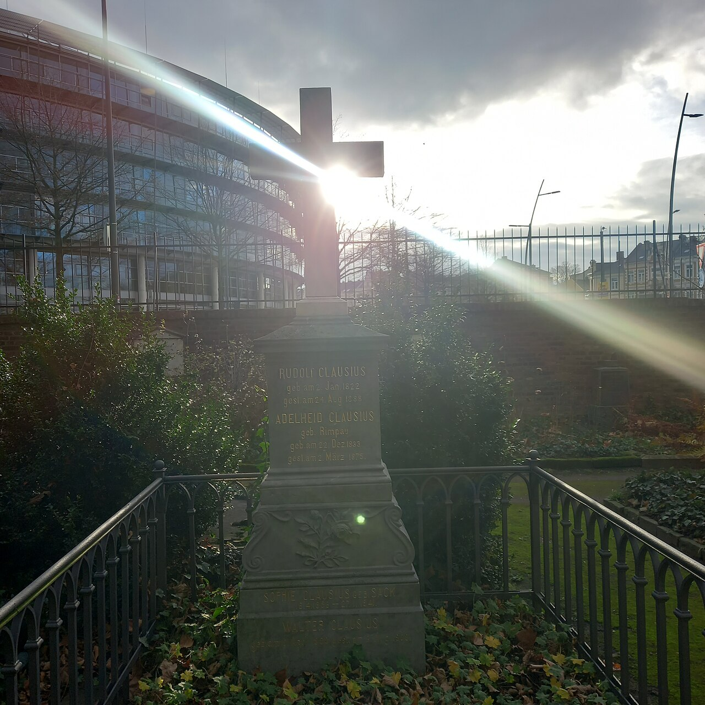

01 · 9 月 16 日（周三） · Ludwig Boltzmann
从原子运动到熵：统计力学的奠基者
课程内容： 微观态、宏观态与热平衡；微正则系综；微观状态数与熵
课堂共看
微观运动可以逆转，宏观热现象为什么有明确的方向？
同一个宏观状态，可以由许多不同的微观状态实现。 Boltzmann 把熵与微观态数联系起来，建立第二定律的统计解释。 从他对原子论的坚持，再认识加州游记中幽默而亲切的物理学家。
课后详读 · 完整故事与资料出处
人物简介
Ludwig Boltzmann（1844–1906）
Ludwig Eduard Boltzmann（1844 年 2 月 20 日—1906 年 9 月 5 日）是奥地利理论物理学家，统计力学的主要奠基者之一。他用原子和分子的统计规律解释宏观热现象，为热力学第二定律提供了统计解释。
早年与求学
他出生于维也纳，十岁以前在家接受教育，随后就读于上奥地利州林茨的高中。十五岁时，父亲去世。1863 年，他进入维也纳大学学习数学与物理，1866 年获博士学位，师从 Josef Stefan。
学术生涯
1869 年，年仅 25 岁的他成为格拉茨大学数学物理教授，后来还在维也纳、慕尼黑和莱比锡任教。他也讲授自然哲学，学生包括 Paul Ehrenfest 和 Lise Meitner。
统计力学贡献：从微观运动到宏观热现象
Boltzmann 把宏观热现象与微观粒子运动联系起来：研究气体怎样趋于平衡、平衡时各微观态如何分配概率、热能怎样分布，并用微观态计数与概率解释熵和热力学第二定律。
揭示熵的微观含义：熵与微观态数（1877）
同样的宏观状态，可以由许多不同的粒子位置和动量安排实现。1877 年，Boltzmann 通过计数这些实现方式，把热力学中的熵与微观状态联系起来。用现代记号写为：
S = k B ln Ω
这里，Ω 是在给定能量、体积和粒子数等约束下，与所选宏观状态相容的微观态数，k B
解释宏观过程的方向：第二定律具有统计意义
在微正则的等概率假设下，一个宏观状态包含的微观态越多，它出现的概率就越大。对宏观体系，平衡状态对应的微观态通常占压倒性多数，因此平衡具有统计上的典型性。
例如，盒中有 N P = ( 1 2 ) N = 2 − N
当 N
确定平衡时的概率：Boltzmann 分布
Boltzmann 发展了热平衡分布的统计描述。用现代正则系综的记号，一个与温度为 T E i i
p i = e − β E i Z , Z = ∑ j e − β E j
这里 β = 1/(k B T ) ，Z
联系温度与平均能量：能量均分定理
Boltzmann 在 Maxwell 等人的工作基础上发展了能量均分的理论。在经典热平衡中，每个以独立二次项出现在能量里的变量，平均贡献 k B T /2
⟨ 1 2 m v x 2 ⟩ = 1 2 k B T , U = 3 2 N k B T
这里 N C V = 3N k B /2k B T
描述气体趋于平衡：Boltzmann 方程与 H 定理（1872）
在 Maxwell 气体动理论的基础上，他用分布函数统计不同位置、动量附近的分子数，并用 Boltzmann 方程描述自由运动和碰撞怎样改变这一分布。对于分子质量为 m F (r , t )
∂ f ∂ t + 𝐩 m ⋅ 𝛁 f + 𝐅 ⋅ ∂ f ∂ 𝐩 = ( ∂ f ∂ t ) coll
这里 f = f (r , p , t )p = m v ∇ r ∂f /∂p 表示动量空间的梯度。左边三项依次表示分布随时间的变化、分子运动造成的空间输运、外力造成的动量变化；右边下标 coll 表示碰撞对分布变化率的贡献。
H 定理表明，在稀薄气体和“分子混沌”等假设下，孤立气体的相应统计熵不减，平衡时得到 Maxwell 速度分布。这为研究气体的弛豫和输运提供了动力学基础。
其他贡献
辐射定律：Stefan–Boltzmann 定律（1884）
他结合热力学与电磁理论中的辐射压，从理论上推出 Stefan 先前提出的四次方辐射定律。黑体单位面积向外辐射的总功率为：
P A = σ T 4
其中 P A σ 是 Stefan–Boltzmann 常数，T
早期系综工作（1884–1885）
他研究由许多遵循相同力学规律、却处于不同微观状态的体系组成的集合，提出了今天微正则系综和正则系综的先行形式，当时分别称为 ergode 和 holode 。这些工作为后来 Gibbs 系统建立系综理论提供了重要基础。
原子是真实存在，还是理论构造？
十九世纪末，原子模型已被用于解释物质性质，但它应当具有怎样的物理地位，仍存在争论。Ernst Mach 强调从经验出发，对把原子假说当作已经确证的实在持保留态度；Wilhelm Ostwald 的能量论则希望以能量及其转化为基础，避免把热现象还原为微观机械运动。
Boltzmann 主张保留原子模型，并以模型解释现象、产生预言的能力来检验它。1895 年的吕贝克会议上，他与 Ostwald 围绕能量论发生激烈争论，Felix Klein 等人支持 Boltzmann。他与 Mach 的关系紧张，却与 Ostwald 保持私人友谊；学术分歧与私人关系并不总是一致。
加州游记：啤酒、英语与龙虾
1905 年，Boltzmann 受邀赴加州大学伯克利分校讲授暑期课程，并在《一位德国教授的黄金国之旅》（Reise eines deutschen Professors ins Eldorado ）中记录这段经历。离开学术争论，他的游记展现了一位会怯场、爱美食，也乐于拿自己开玩笑的教授。
启程前，他在维也纳西北火车站的餐厅吃了烤猪肉、卷心菜和土豆，喝了几杯啤酒，随后在游记中打趣：
“My memory for figures, otherwise tolerably accurate, always lets me down when I am counting beer glasses.”
“我对数字的记忆平时还算可靠，可一数自己喝了几杯啤酒，就总是不灵。”
起初他为用英语讲课而紧张，但第二讲便逐渐放松；听说学生觉得他讲得清楚，他更有信心了。说起练习过的 blackboard 和 chalk，他还颇为得意。
英语老师教过的 lobster 则带来一个实际的收获：他终于能在餐馆点到龙虾沙拉。
当时 Berkeley 校园周围禁止售酒。Boltzmann 打听酒铺时，同事先四下张望、确认他可靠，才透露 Oakland 的店名。他写道：
“I managed to smuggle in a whole battery of wine bottles and from then on the road to Oakland became very familiar.”
“我设法‘走私’进来一整排酒瓶，从此，去 Oakland 的路就变得十分熟悉了。”
酒买回来了，他却仍得饭后偷偷喝，几乎觉得自己染上了恶习。他讽刺道：禁酒风气又给世间增添了一种虚伪。
Klein 的催稿术：你不写，就交给 Zermelo
同一篇加州游记里，Boltzmann 还讲了一次被“催稿”的经历。数学家 Felix Klein 请他为《数学科学百科全书》撰稿，他推辞了很久。Klein 最后写信告诉他：如果你不写，我就把这项任务交给 Ernst Zermelo。
1896 年，Zermelo 利用 Poincaré 回归定理质疑第二定律的机械推导：在满足回归条件的体系中，几乎所有初态对应的运动都会重新接近初态，因而不能断言熵永远严格增加。Boltzmann 则强调第二定律的统计意义，以及宏观气体回归时间的漫长。
Boltzmann 不愿让对方的观点成为百科全书中的通行说法，立即回信接下了任务。原本计划旅行归来后在乡下休息的九月，就这样变成了带着一批维也纳物理学家查文献、赶文章的日子。
另一位参与撰稿的教授 Wirtinger 似乎也有同感，索性把这部百科全书的标志画成一个捕鼠夹：教授被诱饵吸引，就被夹住了。Boltzmann 一边自嘲，一边也赞赏 Klein 和同事们把数学知识整理成可用文献的理想与投入。
晚年与纪念
1906 年 5 月，健康状况的恶化使 Boltzmann 无法继续授课；院长在致主管部门的信中称其患有“严重的神经衰弱”。
1906 年 9 月 5 日，他与妻子、女儿在的里雅斯特附近的杜伊诺度假期间自杀身亡，终年 62 岁。他生前已受到学界广泛尊重，不能把这场悲剧简单归因于学术争论或“原子论无人相信”。他后来安葬于维也纳中央公墓，墓碑上刻着熵公式 S = k log W
Boltzmann 墓碑全貌（维也纳中央公墓） 身后的实验证据
在 Boltzmann 生前，Albert Einstein 已于 1905 年从分子热运动出发，建立了布朗运动的定量理论。他给出悬浮微粒位移的统计规律，把显微镜下可见的运动与分子尺度联系起来，使原子论有了可供实验检验的定量预言。
1908–1909 年，Jean Perrin 通过悬浮微粒的高度分布和布朗运动等测量，验证了相关理论，并得到相互一致的 Avogadro 常数，为原子和分子的存在提供了有力的定量证据，推动了原子论的广泛接受。他因这些研究获得 1926 年诺贝尔物理学奖。
资料与进一步阅读
返回故事目录
· 下一次故事
02 · 9 月 21 日（周一） · Rudolf Clausius
从热机到熵：Clausius 与第二定律
课程内容： 温度；微正则系综续；热容、稳定性与熵
课堂共看
能量守恒，为什么热却总是自发地从高温流向低温？
Clausius 把能量的收支与过程的方向分开，奠定现代热力学的基础。 他为熵命名，也用平均自由程与维里定理研究分子运动。 从创造科学语言的理论家，到带领学生救助伤员的教授。
课后详读 · 完整故事与资料出处
人物简介
Rudolf Clausius（1822–1888）
Rudolf Clausius（1822 年 1 月 2 日—1888 年 8 月 24 日）是德国理论物理学家，热力学的主要奠基者之一，也是气体动理论的重要开拓者。他建立了热力学第二定律的重要表述，并在 1865 年为状态量 S
早年与求学
他出生于当时普鲁士的 Köslin（今波兰 Koszalin）。1840 年进入柏林大学时，他曾对历史很感兴趣，后来选择数学与物理。1848 年，他凭借关于大气光学的论文获得哈雷大学博士学位。
类似的跨学科转向也见于威滕（Edward Witten）：他本科主修历史，曾在 1972 年担任民主党总统候选人乔治·麦戈文（George McGovern）的竞选助理（传记来源 ）；麦戈文最终输给了共和党候选人理查德·尼克松。威滕后来转向理论物理，并在数学物理中作出重要贡献；见 AIP 收录的本人访谈（2021） 。
学术生涯
1850 年，他发表研究热与机械功之间关系的奠基性论文，并在柏林任教。1855–1867 年在苏黎世联邦理工学院任教授，兼任苏黎世大学教授。此后他先后在维尔茨堡和波恩任教，1869 年到波恩后一直工作至去世。
统计力学贡献：熵、分子运动与平均关系
Clausius 的三项工作分别回答三个问题：热过程有什么方向性，快速运动的分子为什么只会缓慢扩散，以及微观作用力怎样决定宏观压力。以下用现代记号介绍这些思想。
1. 描述热过程的方向：熵与第二定律
Clausius 对第二定律的表述是：不可能使一个过程的唯一结果成为把热从低温物体传到高温物体。冰箱能够把热从冷处搬到热处，是因为它还消耗了功。Clausius 在研究这类过程时引入状态量 S ，并在 1865 年将它命名为熵。对于可逆过程中的微小变化：
d S = đ Q rev T
这里 T 是绝对温度，đQrev 是体系在可逆过程中吸收的微小热量。热量依赖过程，而熵是状态函数：两个平衡态之间的熵差，可以沿连接它们的可逆路径计算。对于一个完整循环，第二定律给出 Clausius 不等式：
∮ đ Q T ≤ 0
热量以流入体系为正，T 是与体系交换这份热量的热库温度。可逆循环取等号；计入传热在内的不可逆性时，循环积分小于零。对孤立体系，第二定律表述为 ΔS ≥ 0 。
Clausius 建立了熵的宏观概念与变化规律。后来，Boltzmann 等人进一步追问：这些规律怎样从大量粒子的运动和概率中产生？这正是热力学通向统计力学的关键问题。
2. 解释扩散：气体动理论与平均自由程（1857–1858）
1857 年，Clausius 将分子的平动与内部运动纳入气体动理论，认识到单靠平动能不足以解释气体的全部热能。他给出的分子运动速度很高，荷兰科学家 Christophorus Buys Ballot 随即提出一个尖锐问题：如果分子运动如此迅速，为什么实际观察到的气体混合与扩散却慢得多？
Clausius 在 1858 年的回应抓住了碰撞：分子走过的总路程，并不等于它离出发点的距离。一次次碰撞改变前进方向，长路程可以只对应很小的净位移。他引入平均自由程，描述相邻两次碰撞之间平均走过的距离，使“微观运动快、宏观扩散慢”成为能够定量研究的问题。
λ = 1 2 n σ , σ = π d 2
这是现代稀薄、热平衡的同种硬球气体模型中的结果，采用碰撞前速度近似不相关的假设。n = N/V 为粒子数密度，d 为球的直径，σ 为碰撞截面。密度或碰撞截面越大，平均自由程越短。
用现代随机游走的语言说，在没有宏观流动的情况下，分子多次碰撞后的典型位移只随时间的平方根增长。在三维正常扩散区间，位移的均方值满足 ⟨|r(t) − r(0)|²⟩ ≃ 6Dt ，扩散系数的量级为 D ∼ v̄λ ，其中 v̄ 是平均速率。要扩散到给定距离，碰撞越频繁，通常需要的时间就越长。
铜导线中的电子提供了另一个“运动很快、定向漂移很慢”的例子。室温下，在自由电子近似中，铜的费米速率约为 vF ≃ 1.6 × 10⁶ m/s ，所有导电电子的平均速率约为 ⟨|v|⟩ ≃ 3vF/4 ≃ 1.2 × 10⁶ m/s 。这个速率主要由费米统计决定。平衡时各方向的速度相互抵消，平均速度为零；电流对应的是电场引起的微小定向漂移。
例如，在截面积 A = 1 mm² 、电流 I = 1 A 的铜导线中，取导电电子数密度 n ≃ 8.5 × 10²⁸ m⁻³ ，则漂移速率为 vd = I/(neA) ≃ 7.3 × 10⁻⁵ m/s ，即每秒约 0.073 mm ，其中 e 为元电荷。两种速率相差约十个数量级。平均速率衡量电子运动有多快，漂移速率衡量它们整体朝一个方向移动有多快。
平均自由程把分子碰撞与宏观输运联系起来，成为研究扩散、黏滞和热传导的重要尺度。Maxwell 与 Boltzmann 随后进一步发展了速度分布、碰撞与输运理论。
3. 联系平均动能与作用力：维里定理（1870）
“维里”音译自 virial ，源于拉丁语 vis ，意为“力”。Clausius 于 1870 年把与力有关的长期平均量 − 1 2 ⟨ ∑ i 𝐫 i ⋅ 𝐅 i ⟩
维里定理的关键来自牛顿方程。记粒子动量为 pᵢ = mᵢvᵢ ，对位置与动量的内积求时间导数：
d(∑ᵢ rᵢ·pᵢ)/dt = 2K + ∑ᵢ rᵢ·Fᵢ
若粒子的位置与动量保持有界，且长期平均存在，左边的长期时间平均趋于零，于是得到：
⟨ K ⟩ = − 1 2 ⟨ ∑ i 𝐫 i ⋅ 𝐅 i ⟩
K r i i F i
对三维经典粒子体系，若内部相互作用由只依赖粒子间距离的两体势给出，且除容器壁外没有外场作用，把壁面压力与粒子间作用分开，并在热平衡下使用能量均分定理，可得到：
p V = N k B T + 1 3 ⟨ ∑ i < j 𝐫 i j ⋅ 𝐅 i j ⟩
这里 r ij = r i − r j F ij j i
因此，不必逐一求解所有粒子的轨迹，也能建立平均动能、作用力与宏观压力之间的关系。
其他热力学贡献
建立热、功与内能的关系：热力学第一定律（1850）
在 Joule 等人关于热与功转化的实验基础上，Clausius 将吸热、内能变化与对外做功写进统一的关系，成为现代热力学的重要起点。对不交换物质、整体动能与外场势能不变的封闭体系，用现代记号写为：
d U = đ Q + đ W
U đQ 以体系吸热为正，đW 以外界对体系做功为正。内能是状态函数，热和功则描述能量传递的不同方式，依赖具体过程。这并不意味着能量守恒由 Clausius 一人发现；他的贡献在于热力学理论的清晰表述与系统建立。
确定相共存曲线的斜率：Clausius–Clapeyron 关系
Clausius 在 Clapeyron 的先行工作基础上，用新的热力学框架处理相变。对纯物质的一阶相变，两相共存曲线的斜率满足：
d p coex d T = L T Δ v
pcoex 是两相共存时的压强，L 是从第一相转到第二相的摩尔潜热，Δv 是对应的摩尔体积变化，两者取相同的相变方向。对液–气相变，共存压强就是饱和蒸气压 psat 。若蒸气近似为理想气体、液体摩尔体积可以忽略：
d ln p sat d T ≈ L R T 2
其中 R L
1850 年：修正热质说，保留 Carnot 的可逆热机结论
Carnot 在 1824 年研究热机时，沿用了热质说：做功时，热从高温流向低温，热的总量保持不变。Joule 的实验则支持热与机械功可以相互转化。Clausius 因而需要重新回答：热机输出的功从哪里来，Carnot 关于理想热机的结论还能否成立？
Clausius 在 1850 年指出，热机每完成一个循环，内能回到初始值；从高温热库吸收的热量，一部分转化为输出功，其余排给低温热库。保留可逆热机的思想，并用第二定律限制过程的方向，可以重新得到 Carnot 的结论：在相同的两个热库之间工作，可逆热机的效率最高。
热机输出功 Wout = QH − QC；效率 η = Wout/QH ≤ 1 − TC/TH
这里 QH > 0 是从高温热库吸收的热量，QC > 0 是向低温热库放出的热量；Wout 以热机对外输出功为正。T_{\mathrm H} 与 T_{\mathrm C} 是两个热库的绝对温度，满足 T_{\mathrm H}>T_{\mathrm C}>0 。可逆热机取效率上限。
第一定律说明热量与功怎样满足能量守恒，第二定律说明能量转化受哪些方向和效率限制。这是两个不同、但彼此相容的规律。
1865 年：给 entropy 取个像 energy 的名字
Clausius 对热转化与过程方向的研究先于“熵”这个名称。1865 年，他正式把状态量 S 命名为 entropy。词根来自希腊语 τροπή （tropē ，意为“转变”）；他有意让新词与 energy 相似，以呼应这两个物理量之间的联系。
“I have intentionally formed the word entropy so as to be as similar as possible to the word energy”
“我有意把 entropy 这个词造得尽可能与 energy 相似。”
——Clausius，1865 年论文；英译节选见 William F. Magie 编 A Source Book in Physics （1935）
同一段文字还说明，采用古典语言的词根，是希望这个名称能在不同现代语言中通用。这个命名既考虑物理含义，也考虑科学交流；理解熵本身，则需要回到它的定义与第二定律。
1923 年：胡刚复创译“熵”
中文的“熵”（shāng）由物理学家胡刚复创译，通常追溯到 1923 年。当时，他为来南京讲学的热工学家 Rudolf Plank 翻译；1923 年第 5 期《科学》刊载了原文及他的译文《热力学第二定律及熵之观念》。
“熵”是一个形声字：左边的“火”是形旁，表示它属于热学范畴；右边的“商”是声旁，提示读音 shāng，同时也呼应除法之商的意思。造字的启发来自可逆过程中“微小吸热量除以绝对温度”的关系。
讲台之外：救护队与家庭
1870 年普法战争爆发时，48 岁的 Clausius 组织了由波恩学生组成的救护队。在 Vionville 和 Gravelotte 一带，他参与搬运和救助伤员，自己腿部受伤，此后长期受疼痛和行动不便困扰。
1875 年，妻子去世，他承担起照料孩子的责任。英国皇家学会悼文收录的兄弟 Robert 的回忆提到，他会辅导孩子的功课，也投入他们的日常生活。抽象的理论工作与这些具体责任，共同构成了他的生活。
56 岁学骑马：从医生的建议到拿手本领
腿伤让 Clausius 多年行走不便，医生建议他尝试骑马。于是，1878 年，已经 56 岁的他开始学习这项新技能。英国皇家学会悼文收录的兄弟 Robert 的回忆说，他后来成了一位出色的骑手，骑马也明显改善了他的健康。
从为缓解腿伤而尝试，到练成一项新本领，这段经历让讲台之外的 Clausius 也有了清晰的轮廓。

Clausius 与妻子 Adelheid 的墓碑（波恩旧公墓）图片来源
Clausius 之后的熵：从热过程到信息与时空
熵的概念不断扩展：从热过程的方向和微观状态的统计，到信息的不确定性、量子纠缠与时空几何。以下十个节点采用现代记号，年份对应代表性论文。阅读时可以关注同一个问题：每一种熵究竟在描述什么？
Google Scholar 对“entropy”给出的估计结果约 499 万条
1. Boltzmann (1877)：数微观态
Clausius 建立了熵与可逆热交换的关系；Boltzmann 则为熵寻找微观解释：同一个宏观状态可以由多少种粒子排列和运动方式实现？1877 年，他把这些实现方式的数目与熵联系起来。用现代记号写为：
S = k B ln Ω
\Omega 是与所指定宏观状态相容的微观态数；约束可包括能量、体积、粒子数及粗粒化的密度分布等。k B
2. Gibbs (1902)：看概率分布
当体系与热库交换能量时，各微观态的概率通常并不相等。Gibbs 在 1902 年的著作中系统建立系综方法，把熵与整个微观态分布联系起来。原著主要使用经典相空间中的连续分布；用现代离散记号表示，相应的 Gibbs 熵为：
S = − k B ∑ i p i ln p i
p i i 个微观态的概率，所有概率之和为 1，并约定 0 ln 0 = 0 。当 \Omega 个微观态等概率，即 p i = 1/ΩS = k B ln Ω
这里的熵属于所选概率分布。对于孤立经典体系，精确 Hamilton 演化保持细粒化 Gibbs 熵不变；讨论宏观熵增时，还需要说明粗粒化或所保留的宏观信息。
3. von Neumann (1927)：描述量子态
量子体系的统计状态由密度矩阵 ρ̂ 描述，它同时容纳纯态和混合态。1927 年，von Neumann 在量子统计的框架下建立相应的熵表达式。用现代记号写为：
S = − k B Tr ( ρ ^ ln ρ ^ )
Tr 表示取迹，密度矩阵满足 Tr ρ̂ = 1 。若其本征值为 p i −k B ∑p i ln p i ，且不依赖所选基底。纯态只有一个非零本征值 1，因此熵为零；混合态的熵大于零。
量子理论还带来一种新的可能：整体处于纯态时，一部分的约化态仍然可以是混合态。将这个公式用于约化密度矩阵，就为后面介绍的纠缠熵提供了基础。
4. Shannon (1948)：消息的不确定性
通信中的问题是：在收到一个符号之前，它的取值有多大不确定性？1948 年，Shannon 用下面的量描述离散信源：
H = − ∑ i p i log 2 p i
这里 p i H
这一进展使熵成为通信与数据压缩的定量工具。它衡量概率上的不确定性，不评价消息的意义或价值。对同一组物理微观态概率，Gibbs 熵与信息熵满足 S = k B ln 2 · H
5. Jaynes (1957)：由约束选择分布
前面的公式由概率分布计算熵；Jaynes 将问题反过来：只知道一些平均量时，应当采用什么分布？1957 年，他把最大熵原则系统用于统计力学。以已知平均能量 U 为例，允许的概率分布必须满足：
概率归一化 ∑i pi = 1；已知平均能量 ∑i pi Ei = U
在给定微观态及其计数方式后，从这些分布中选取 Gibbs 熵最大的一个。用拉格朗日乘子处理上述两个约束，就得到正则分布：
p i = e − β E i Z , β = 1 k B T
E i Z = ∑i exp(−βE i )β 由平均能量约束确定；与热力学温度对应后，β = 1/(k B T ) 。
这一方法将系综构造表述为受已知信息约束的推断过程，使熵既能描述分布，也能帮助选择分布。体系达到平衡的实际机制和所需时间，则属于另一个动力学问题。
6. Rényi (1961)：改变对不同概率的权重
单一的 Shannon 熵不能完全刻画一个概率分布。1961 年，Alfréd Rényi 引入参数，构造一族对概率大小有不同敏感程度的熵：
H α = 1 1 − α ln ∑ i p i α
其中 α > 0，α ≠ 1 。较大的 α 更突出大概率事件；0 < α < 1 时，小概率事件的影响相对增强。当 α → 1 时，恢复 H = −∑i p i ln p i
例如二阶 Rényi 熵 H 2 = −ln ∑i p i 2 S 2 = −ln Tr ρ̂²Tr ρ̂² 直接相连（取 k_B = 1 ）。因此，这一族熵也成为研究量子态与纠缠的工具。
7. Bekenstein–Hawking (1973–1975)：黑洞也有熵
把有熵的物体投入黑洞后，如果只看外部，熵似乎减少了。Bekenstein 在 1973 年系统提出，应把黑洞自身的熵也计入，并主张它正比于事件视界面积。Hawking 在 1974 年发现黑洞会发出具有热谱的量子辐射，1975 年发表完整计算。由此确定的温度，使面积熵的比例系数也得到确定。在 Einstein 引力的半经典近似下：
S_{\mathrm{BH}}=\frac{k_{\mathrm B}c^3A}{4G\hbar}=\frac{k_{\mathrm B}A}{4\ell_{\mathrm P}^{\,2}},\qquad \ell_{\mathrm P}=\sqrt{\frac{G\hbar}{c^3}}\approx1.616\times10^{-35}\,\mathrm m
A 是事件视界面积，G c ℏ 是约化 Planck 常数，\ell_{\mathrm P} 是普朗克长度。这个公式把热力学、量子理论与引力联系在一起：黑洞的熵由视界面积决定。
广义第二定律要求考察黑洞熵与外部物质、辐射熵之和。黑洞蒸发时，视界面积可以减小，外部辐射的熵也必须同时计入。这一发现使“黑洞的熵由哪些微观自由度承载”成为量子引力中的核心问题。
8. 纠缠熵 (1986–1996)
von Neumann 熵的一个重要应用，是研究量子体系不同部分之间的纠缠。设整体 AB B 的自由度取迹后，得到 A 的约化密度矩阵。取 k_B = 1 ，定义：
ρ̂_A = Tr_B |ψ⟩⟨ψ|，S_A = −Tr(ρ̂_A ln ρ̂_A)
对于二分纯态，S_A = S_B ；当两部分没有纠缠时，S A = S B = 0
|ψ⟩ = (|00⟩ + |11⟩)/√2，S_AB = 0，S_A = S_B = ln 2
此时 ρ̂A = ρ̂B = Î2 /2 ，其中 Î2 是二维单位矩阵。整体的量子态完全确定，但任一量子比特的约化态都是最大混合态。这种局部混合性来自两部分的纠缠；若整体本来就是混合态，子系统熵还包含其他混合贡献，便不能单独用来度量纠缠。
这一概念与黑洞问题很早就发生联系。1986 年，Luca Bombelli、Rabinder K. Koul、Joohan Lee 和 Rafael D. Sorkin 研究了将不可观测自由度取迹产生的熵及其黑洞解释。1993 年，Mark Srednicki 对三维空间中无质量自由标量场的基态计算发现：固定短距离截断后，大球形区域的纠缠熵领先项随边界面积增长。这提供了面积律的重要实例。
1996 年，Charles H. Bennett、Herbert J. Bernstein、Sandu Popescu 和 Benjamin Schumacher 进一步赋予纠缠熵操作意义：对许多份相同且独立制备的二分纯态，仅用局域操作与经典通信，每份态可渐近提取 S A /ln 2
9. Kitaev–Preskill / Levin–Wen (2006)：拓扑纠缠熵
纠缠熵的领先项常由局部边界附近的关联决定，其中是否还藏着更整体的信息？2006 年发表的两组独立工作——Alexei Kitaev 与 John Preskill、Michael Levin 与 Xiao-Gang Wen——提出了拓扑纠缠熵。对于平面上二维有能隙拓扑相的基态，在没有任意子激发时，取边界光滑、尺度远大于关联长度的圆盘状区域 A ，有（k_B = 1 ）：
S_A = αL − γ + o(1)，γ = ln 𝒟，𝒟 = √(∑ₐ dₐ²)
L 是边界长度；面积律系数 α 依赖微观细节，o(1) 是随区域增大而趋于零的修正。拓扑常数项 −γ 则与任意子类型 a 的量子维数 d_a 有关，𝒟 称为总量子维数。
为了从局部边界贡献中提取这项常数，Kitaev–Preskill 选择三个相邻的大区域及其并集，使如下组合中的局部边界项相消：
S_topo = S_A + S_B + S_C − S_AB − S_AC − S_BC + S_ABC → −γ
这里 AB = A∪B ，其余下标同理；箭头表示区域尺寸远大于关联长度的极限。三个区域及其并集须按论文的构型选取，使局部边界贡献相消。Levin–Wen 使用另一种区域组合提取同类拓扑信息。
例如，toric code 有四种任意子类型，均满足 d a = 1𝒟 = √4 = 2 ，γ = ln 2 。这使我们能仅从基态的纠缠结构中提取拓扑序的信息。不同拓扑序也可能具有相同的 γ ，因此它是重要的特征量，而不是完整的分类标签。
10. Ryu–Takayanagi (2006)：熵与极小曲面
黑洞熵与面积有关，量子场的纠缠熵也常有面积律；两者能否建立定量联系？2006 年，Shinsei Ryu 与 Tadashi Takayanagi 在 AdS/CFT 对应中提出了这样的关系。这里，一类边界量子场论与多一维空间中的引力理论相对应。对于具有经典 Einstein 引力对偶的静态情形，取 k_B = ℏ = c = 1 ，在经典引力领先阶：
S A = − Tr ( ρ ^ A ln ρ ^ A ) ≃ Area ( γ A ) 4 G N
ρ̂_A 是边界量子体系中区域 A 的约化密度矩阵，G_N 是引力理论的牛顿常数。γ_A 位于固定时刻的引力空间切片上，以 ∂A 为边界，并与 A 共同围成一个体区域；这就是同调条件。在所有满足这些条件的候选曲面中，取面积最小者。比较场论的熵与曲面面积时，两侧采用相匹配的短距离截断。
式中的近似号提醒我们，面积项是经典引力的领先贡献；超出这一近似还需量子修正。这条关系把量子体系的熵计算转化为引力空间中的几何问题，使熵成为联系量子信息与时空结构的定量工具。整体为纯态时，它计算区域与其余部分的纠缠熵；整体为混合态时，它计算区域的 von Neumann 熵，其中也包含混合的贡献。
资料与进一步阅读
返回故事目录
· 上一次故事
· 下一次故事
03 · 9 月 23 日（周三） · Josiah Willard Gibbs
用概率描述热平衡：Gibbs 与系综理论
课程内容： 正则系综；热库、Boltzmann 因子与配分函数
课堂共看 不知道每个分子的轨迹，怎样计算整个体系的热力学性质？
先确定体系能与环境交换什么，再选择系综。 从微观态的概率与配分函数，得到自由能、内能和涨落。 熵依赖怎样计数：任意的粒子标签不能增加热力学组分。 课后详读 · 完整故事与资料出处
人物简介
Josiah Willard Gibbs（1839–1903）
Josiah Willard Gibbs（1839 年 2 月 11 日—1903 年 4 月 28 日）是美国理论物理学家、物理化学家，与 Maxwell、Boltzmann 并列为统计力学的主要奠基者。“统计力学”（statistical mechanics）这一名称也由他提出。他把系综方法发展成系统的理论：用一组可能的微观状态及其概率，计算宏观物理量，并建立与热力学的联系。
早年与求学
他出生于美国康涅狄格州 New Haven，父亲 Josiah Willard Gibbs Sr. 是耶鲁大学神学院的圣经文献学教授。1858 年本科毕业后，他继续在耶鲁研究工程问题；1863 年以齿轮轮齿形状的研究获得博士学位，这是美国授予的第五个博士学位，也是第一个工程学博士学位。
留校任助教时，他前两年教拉丁语，第三年教自然哲学。1866–1869 年，他先后在巴黎、柏林和海德堡学习数学与物理。
学术生涯
1871 年，Gibbs 成为耶鲁大学数学物理学教授，一直任职到 1903 年去世。1873 年，他发表热力学图示与曲面研究；1876、1878 年分两部分发表《论非均匀物质的平衡》，建立广泛适用于物理和化学的平衡理论。1902 年，《统计力学基本原理》出版，系统呈现了他关于系综、概率分布与热力学基础的研究。
统计力学贡献：系综、熵与粒子计数
三项工作回答三个相连的问题：用什么概率描述体系，如何从概率计算熵，以及哪些差别应当算作不同状态。下面使用现代离散记号和经典极限公式；Gibbs 原著主要讨论连续相空间。
用概率描述整个体系：系综理论（1902）
系综由许多遵守相同宏观条件的假想副本组成，每个副本都代表一个完整体系，其微观状态可以不同。Gibbs 将这一方法发展成系统的理论。若微观态 i 的概率为 p_i ，物理量在该状态下的值为 A_i ，其系综平均就是：
⟨A⟩ = ∑ᵢ pᵢ Aᵢ
系综的选择取决于体系与环境能交换什么。对简单的单组分体系，常用的三种平衡系综如下：
表中 E,V,N,T,\mu 分别表示能量、体积、粒子数、温度和化学势，\Omega 是指定能量壳内的微观态数。下面以只交换能量的正则系综为例。
热库怎样给出 Boltzmann 权重？ 设体系的体积、粒子数固定，与一个大热库弱耦合；整体孤立，总能量为 E_{\mathrm{tot}} 。体系处于能量为 E_i 的微观态 i 时，热库能量就是 E_{\mathrm{tot}}-E_i 。在整体能量壳内各微观态等概率的假设下，体系处于该微观态的概率，正比于与之相容的热库微观态数：
p_i\propto\Omega_{\mathrm R}(E_{\mathrm{tot}}-E_i),\qquad S_{\mathrm R}=k_{\mathrm B}\ln\Omega_{\mathrm R}
下标 \mathrm R 表示热库。热库足够大，交换能量使其温度的变化可以忽略。利用 (\partial S_{\mathrm R}/\partial E_{\mathrm R})_{V_{\mathrm R},N_{\mathrm R}}=1/T ，将热库熵作一阶展开：
S_{\mathrm R}(E_{\mathrm{tot}}-E_i)\simeq S_{\mathrm R}(E_{\mathrm{tot}})-\frac{E_i}{T}
代回态数公式，不依赖 i 的因子在归一化时抵消，得到 p_i\propto\mathrm e^{-E_i/(k_{\mathrm B}T)} 。令 \beta=1/(k_{\mathrm B}T) ，便得到正则分布和配分函数：
pᵢ = exp(−βEᵢ)/Z，Z = ∑ᵢ exp(−βEᵢ)
其中 β = 1/(kBT) ，E_i 是微观态的能量，配分函数 Z 使概率归一化。对于能级不显含温度的体系，Z 还给出 Helmholtz 自由能和内能：
F = −kBT ln Z，U = −∂ ln Z/∂β（固定 V、N）
系综方法由此把微观状态的概率分布与宏观热力学性质联系起来。
从概率分布计算熵：Gibbs 熵（1902）
在正则系综中，不同微观态通常具有不同概率。Gibbs 用整个概率分布来描述熵；用现代离散记号写为：
S = −kB ∑ᵢ pᵢ ln pᵢ
概率满足 ∑ᵢpᵢ = 1 ，并约定 0 ln 0 = 0 。当 \Omega 个状态等概率、p_i=1/\Omega 时，立即得到 S=k_{\mathrm B}\ln\Omega 。在正则系综中，代入 Boltzmann 分布则有 S=k_{\mathrm B}(\ln Z+\beta U) ，从而与 F=U-TS 一致。
这个表达式把热力学熵与概率联系起来，也成为后来量子统计和信息论的重要参照。在孤立体系的 Hamilton 演化下，保留全部相空间细节的 Gibbs 熵（细粒化熵）保持不变。要讨论宏观熵增，还需要说明初始条件，以及如何按有限分辨率对微观细节作平均，即粗粒化；熵增并不能只由上面的公式推出。
区分物理状态：粒子计数与混合熵
设两个等体积容器各有 N 个理想气体分子，初始温度、压强相同。若两侧是不同种类的气体，移去隔板后，每种气体都能占据两倍体积，总混合熵为：
ΔS混合 = 2NkB ln 2
若两侧原本就是同一种气体、处于相同热力学状态，在宏观热力学中，移去隔板不产生这种正比于粒子数的混合熵。问题因此变得尖锐：为什么给分子加上“原来在左边”或“原来在右边”的标签，不应该凭空增加热力学熵？
Gibbs 在 1902 年原著的最后一章区分了按粒子标号细分的状态，以及不因同种粒子置换而区分的状态。在可忽略量子交换效应的经典极限下，对同种、无内部自由度的粒子，现代的正则配分函数写为：
Zₙ = [1/(N! h³ᴺ)] ∫ d³ᴺq d³ᴺp exp[−βH(q,p)]
其中 H(q,p) 是 Hamilton 函数，q,p 分别代表全部位置和动量坐标。因子 1/N! 避免把同种粒子的标号排列重复计数；h^{3N} 由 Planck 常数确定相空间的计数尺度，使配分函数无量纲；这是吸收量子理论后采用的现代写法，并非照录 Gibbs 原著的记号。具体的量子统计由后来的 Bose、Fermi 和 Dirac 等人建立。
这项工作的意义，在于把“哪些差别算不同的物理状态”纳入统计力学的基础。混合熵不仅涉及计数，还涉及组分能否被物理地区分和分离；任意人为编号不能成为新的热力学组分。
其他贡献
研究物质组成与相平衡：化学势与 Gibbs 自由能（1876–1878）
在《论非均匀物质的平衡》中，Gibbs 将物质组成的变化纳入热力学。对只考虑体积功、忽略界面等额外贡献的多组分简单体系，基本关系写为：
dU = T dS − p dV + ∑ₐ μₐ dNₐ
其中 N_a 是第 a 种组分的粒子数。化学势 \mu_a 描述增加该组分时，内能对粒子数的变化率：
\mu_a=\left(\frac{\partial U}{\partial N_a}\right)_{S,V,N_{b\ne a}}
求偏导时保持熵、体积和其他组分的粒子数不变。对于各组分总量固定的相平衡问题，在恒温恒压下，稳定平衡使 Gibbs 自由能最小；能够在两相间交换的组分，其化学势在平衡时相等：
G = U + pV − TS，μₐ⁽ᵅ⁾ = μₐ⁽ᵝ⁾
这里上标 \alpha,\beta 标记两个相。忽略界面与外场等额外效应时，两相平衡还要求温度和压强相同。化学势控制物质在相间的分配，也是巨正则系综中控制粒子交换的变量。
两种自由能适用的控制条件不同。上文的 Helmholtz 自由能 F = U − TS 用于固定温度、体积和粒子数的平衡问题；Gibbs 自由能 G = U + pV − TS 用于固定温度、压强和粒子数的平衡问题。多组分体系需要固定各组分的总粒子数。对这里的简单体系，
dG = −S dT + V dp + ∑ₐ μₐ dNₐ
因此，恒温恒压时改变组成所带来的自由能变化，正由各组分的化学势控制。
确定多相共存的自由度：Gibbs 相律
对于只受温度、压强和组成控制的平衡体系，以 C 表示独立组分数、P 表示共存相数，可独立改变的强度变量数为：
f = C − P + 2
这里 f 是热力学自由度数。对无化学反应的混合物，温度、压强和各相的组成共有 2+P(C-1) 个变量；各组分在各相中的化学势相等，给出 C(P-1) 个约束，相减即得相律。
以水为例，冰、水和水蒸气三相共存时 C=1 、P=3 ，所以 f=0 ：温度和压强都由三相共存条件确定。这里计数的是强度变量，不包括各相所占的比例。有化学反应时，应先确定独立组分数：若有 s 种物种、r 个独立反应，且无其他组成约束，则 C=s-r ，再代入相律。
发展物理计算的语言：现代向量分析
Gibbs 与 Heaviside 独立发展现代向量分析。Gibbs 引入了沿用至今的点积与叉积记号，并将向量代数和向量微积分系统化，使之成为适合物理学应用的计算工具。
Gibbs 在 1881、1884 年印行供学生使用的讲义，后来由学生 Edwin Bidwell Wilson 整理为 1901 年出版的《向量分析》。
Gibbs 的博士课题：轮齿应该做成什么形状？
Gibbs 最早的研究涉及一个机械设计问题。1863 年，24 岁的他以《论直齿轮传动中的轮齿形状》（On the Form of the Teeth of Wheels in Spur Gearing ）获得耶鲁大学博士学位，这也是美国第一个工程学博士学位。论文讨论的是如何确定相互配合的齿形，使两个齿轮按预定的转动关系传递运动。
可以用一对外啮合齿轮理解这个问题：20 齿的小轮转一圈，40 齿的大轮反向转半圈。但要让大轮在每一瞬间都以小轮一半的转速转动，还需要合适的齿形。两齿接触的位置会沿齿面移动，各处的轮廓必须配合，才能连续传递所要求的运动。
从直齿轮的端面看，齿廓是两条平面曲线。问题便成为：给定两轮的转动关系，怎样选择这两条曲线，使它们在工作区间内连续相切，既不分离，也不互相穿入？Gibbs 在论文开篇写道：“the subject reduces to one of plane geometry ”，即“这个问题可以化为一个平面几何问题”。具体的机械运动由此成为可以用几何方法研究的对象。
下图是论文的第 25 图。John H. Lienhard 指出，论文的 25 幅插图都是用于推导的几何构造，并未直接画出完整的轮齿外形。它们体现了 Gibbs 的研究思路：先把机械设计中的接触条件写成几何关系，再研究满足条件的曲线。
十年后，Gibbs 在 1873 年的热力学研究中，用内能、熵和体积构成曲面，以几何关系讨论平衡与稳定性。从早年的齿廓曲线到热力学曲面，可以看到几何方法在他研究中的重要地位。这篇早年的齿轮博士论文长期未刊，直到 1947 年才首次正式出版，距他获得学位已有 84 年。
九年无薪的教授：耶鲁与 Johns Hopkins 的邀约
1871 年受聘时，Gibbs 还没有发表数学物理方面的论文。他在耶鲁的教授职位最初九年没有薪水，生活由父亲留下的财产支持。1880 年，Johns Hopkins 大学提出年薪 3000 美元的聘请，耶鲁随后给出每年 2000 美元；他选择留在 New Haven。
在这九年中，他完成并发表了热力学曲面和非均匀物质平衡的代表性研究。
Gibbs 终身未婚。1869 年回国后，他继续住在 New Haven 的家庭旧居，与姐妹 Anna、Julia 以及 Julia 的家人共同生活。家产使他能够维持独立的生活，也支持了他最初九年没有薪水的教授生涯。
读不懂公式的人，为什么替它们付印刷费？
Gibbs 的重要论文发表于《康涅狄格科学院学报》。论文篇幅长，数学公式又多，排印成本很高。为让工作得以出版，耶鲁教授和 New Haven 的商人共同筹款；据美国物理联合会的历史介绍，资助者中很少有人、甚至可能没有人能读懂这些论文。
学院通过与其他学会交换学报传播论文，Gibbs 也主动寄出抽印本，并另发摘要。Maxwell 的阅读与介绍，进一步帮助同行理解这些抽象结果。
Maxwell 的礼物：把热力学曲面做成石膏模型
1873 年，Gibbs 用几何方法研究热力学，把固定物质量时的内能写成熵和体积的函数 U=U(S,V) 。曲面不仅画出状态，还把温度与压强包含在斜率中：
T = (∂U/∂S)ᵥ,ₙ，p = −(∂U/∂V)ₛ,ₙ
Maxwell 读后，真的动手把这套几何关系做成立体模型：先用黏土塑形，再制成石膏模型，并把其中一件送给 Gibbs。这件模型至今仍保存在耶鲁大学物理系。他还在曲面上画出等温线和等压线；苏格兰国家博物馆的介绍记载，部分曲线是借助阳光掠过曲面时形成的轮廓描出来的。
一篇高度抽象的论文，就这样变成可以拿在手里、转过来观看的礼物。模型表现的是具有固、液、气相特征的理想化物质，而不是把水的全部实验数据原样做成立体图。
读图提示： 几何图左上角用旧记号 v,\phi,e 表示体积、熵与内能；标为 T_i 和 P_i 的曲线分别是等温线和等压线。对照上面的偏导数公式：固定体积时，沿熵方向的曲面斜率给出温度；固定熵时，沿体积方向的斜率的负值给出压强。
读者嫌太难，作者却嫌太长
1892 年 6 月 5 日，Rayleigh 写信给 Gibbs，建议他为《论非均匀物质的平衡》出新版，或以这篇论文为基础写一本专著，让读者更容易理解其中的思想。他认为原文：
“too condensed and too difficult for most, I might say all, readers.”
“对大多数读者——我甚至可以说，对所有读者——都过于凝练，也过于难懂。”
Gibbs 在 6 月 27 日的回信中，先回应了 Rayleigh 提出的光学问题，末尾谈到这篇论文时写道：
“I myself had come to the conclusion that the fault was that it was too long. I do not think that I had any sense of the value of time, of my own or others, when I wrote it.”
“我自己倒早已得出结论，认为它的毛病在于太长了。我想，写这篇论文时，我对时间的价值并没有什么意识，无论是自己的时间，还是别人的时间。”
这段往来反映了科学写作中的一个问题：文字简短，并不一定容易理解。Rayleigh 希望 Gibbs 多作一些解释；Gibbs 的回信则带有对自己写作方式的反省，提到了作者和读者双方付出的时间。这里讨论的是他的热力学长篇论文《论非均匀物质的平衡》。
晚年与纪念
1902 年：《统计力学基本原理》
《统计力学基本原理》的副标题是“特别论及热力学的合理基础”。书中先讨论一般力学体系的概率分布，最后一章再专门讨论分子体系中的同种粒子计数与粒子数变化。这样的安排让系综方法不必从某一种具体气体模型出发，也能建立与热力学的联系。
逝世与学术影响
1903 年，Gibbs 在 New Haven 去世，安葬于当地的 Grove Street Cemetery。他的一生与耶鲁和这座城市紧密相连，系综方法却进入了远为广阔的研究领域，后来在量子统计、多体物理和计算统计物理中继续发展。
据 Yale Alumni Magazine（2017） 转述，Einstein 曾称 Gibbs 为“the greatest mind in American history ”（美国历史上最伟大的头脑）。
Gibbs 墓碑（New Haven） 资料与进一步阅读
返回故事目录 · 上一次故事 · 下一次故事
04 · 9 月 28 日（周一） · Agnes Pockels
一封来自家庭实验者的信
课程内容： 自由能、能量涨落与二能级系统
课堂共看
没有大学职位和正式实验室，怎样让自己的测量被认真看待？
Pockels 在家庭条件下研究水面，用装置控制表面面积。 1891 年，Rayleigh 将她的来信推荐给《Nature》。 一层几乎看不见的物质，能显著改变水面的力学性质。
课后详读 · 完整故事与资料出处
人物生平与统计物理贡献 Agnes Pockels (1862–1935) 德国表面科学先驱；在家庭条件下开展实验。
出生于 Venice，成长并长期生活在 Braunschweig。
在缺乏正规大学研究条件的情况下，自行研究水面与表面薄膜。
1891 年来信经 Rayleigh 推荐发表于 Nature；晚年获荣誉博士学位。
把水面变成可以测量的体系 设计以可移动挡板控制水面面积的装置。
研究污染物和薄膜如何改变表面张力。
她的工作为后来表面膜的定量研究奠定基础。
控制表面膜面积的装置示意本课程绘制 · 模型或教学示意，非实验数据 生平与贡献资料 完整故事
Pockels 的实验场所不是人们熟悉的大学实验室。她在家庭条件下研究水面，注意到水面是否洁净以及面积如何变化，会影响测得的表面性质。日常观察成为研究的关键一步，是她没有满足于“水面好像变了”，而是设计方法，使变化能够被控制和比较。
她把装置、操作和测量结果写信告诉 Rayleigh。1891 年，这封信连同他的推荐说明出现在《Nature》上。原信值得读：说服读者的不是头衔，而是具体的实验描述。一个来自学术机构之外的人，需要的不仅是好奇心，还要把观察转成别人能够复核的问题。
这也不是一个“随便洗碗就发现定律”的故事。家庭环境带来线索，长期、细致的测量才产生知识。她研究的表面膜让我们看到，物质的总量很少，若集中在界面上，影响却可能很大。与其把故事讲成偶然灵感，不如留意她怎样把水面变成可操控的实验对象。
资料与进一步阅读
返回故事目录
· 上一次故事
· 下一次故事
05 · 9 月 30 日（周三） · Jacobus Henricus van ’t Hoff
爱读诗的 van ’t Hoff：糖水为什么像气体？
课程内容： 化学势、巨正则系综与粒子数涨落
课堂共看
糖分子泡在水里，为什么渗透压还会出现理想气体式的规律？
糖厂实习让他决定追求纯科学；他也喜爱诗歌，尤其是 Byron。 他以“科学中的想象力”为题作过就职演讲。 半透膜只让水通过：压力差可以抵消组成造成的化学势差。
课后详读 · 完整故事与资料出处
人物生平与统计物理贡献 Jacobus H. van ’t Hoff (1852–1911) 荷兰物理化学家；首届诺贝尔化学奖得主。
在 Delft、Leiden、Bonn、Paris 等地学习，1874 年获博士学位。
先后在 Amsterdam 和 Berlin 开展研究。
1901 年因化学动力学与溶液渗透压方面的工作获诺贝尔化学奖。
稀溶液为什么有类似气体的规律 建立稀溶液渗透压与温度、浓度的定量关系。
把溶液平衡与热力学联系起来，发展物理化学。
理想稀溶液的渗透压关系可写成 \Pi V=Nk_{\mathrm B}T 。
半透膜与理想稀溶液渗透压本课程绘制 · 模型或教学示意，非实验数据 生平与贡献资料 完整故事
van ’t Hoff 的官方传记记录了一个职业选择：在糖厂实习时，他想到技术员职业可能带来的单调生活，于是更坚定地选择纯科学。这位后来研究化学动力学与渗透压的人，也喜欢自然、哲学和诗歌，尤其喜爱 Byron。科学想象力对他并不是修辞，他曾以此为题发表就职演讲，讨论科学家生平中的创造性。
他的溶液研究提出了一个出人意料的联系。理想气体稀疏、容易想象成在空间里运动的粒子；糖水却是稠密液体，糖分子浸在大量水分子中。然而在理想稀溶液极限，渗透压同样与溶质浓度和温度成正比。糖厂经历与后来这条规律可以并列讲述，但没有依据把前者说成后者的直接灵感。
在诺贝尔演讲里，他回顾了膜实验与化学平衡的联系。想象两侧分别是纯水和糖水，膜让水通过，却留住糖。给糖水一侧施加合适的较高压力，就能阻止净渗透。1901 年，他成为第一位诺贝尔化学奖得主；对这次课而言，比奖项更值得追问的是：跨越气体与溶液的相似性，究竟由什么平衡条件支撑？
资料与进一步阅读
返回故事目录
· 上一次故事
· 下一次故事
06 · 10 月 12 日（周一） · Stanisław Ulam
一副纸牌怎样走进科学计算？
课程内容： 经典气体、经典配分函数与态密度
课堂共看
一种单人纸牌游戏有多大胜率：穷举所有牌序，还是多玩几次？
Ulam 思考单人纸牌的成功概率，想到用重复试验估计它。 把难以枚举的可能性，转成可以取样的随机过程。 用于统计力学时，关键是按正确权重抽样，并估计误差。
课后详读 · 完整故事与资料出处
人物生平与统计物理贡献 Stanisław Ulam (1909–1984) 波兰裔美国数学家；随机计算方法的重要推动者。
在 Lwów 接受数学训练，后来赴美国工作。
1940 年代进入 Los Alamos，参与数学、物理与计算研究。
与同事发展蒙特卡洛方法，并参与早期非线性振子链研究。
让随机抽样成为计算工具 与合作者发展用随机样本估计积分和物理量的方法。
为高维统计计算提供可操作的路径；取样权重与误差控制仍然关键。
参与 FPUT 问题，使计算实验成为研究热化的重要途径。
用随机取样估计四分之一圆的面积本课程绘制 · 模型或教学示意，非实验数据 MANIAC 计算机与 Metropolis、RichardsonLos Alamos National Laboratory · 图片来源 · Attribution 生平与贡献资料 完整故事
Ulam 关于蒙特卡洛方法的回忆，常从单人纸牌讲起。给定洗好的牌序，游戏有成功或失败的结果；但要直接数清所有可能牌序中成功者的比例，计算会非常复杂。另一个办法是不断洗牌、重复试验，再用成功的频率估计概率。问题没有消失，却被改写成一种更适合机器执行的工作。
这不是宣告精确数学失去意义。随机方法同样需要清楚的概率模型、取样规则和误差控制。Ulam 与同事们推动这种思路进入科学计算，Monte Carlo 这一名称也把方法与机会游戏的意象联系起来。洛斯阿拉莫斯的历史回顾记录了纸牌构想和后续合作，不能把完整方法的形成归结为某一次游戏的瞬间。
本课写下经典配分函数时，每个粒子的位置和动量都会增加积分维数。纸上可以用一个积分号概括，实际计算却可能十分艰难。Ulam 的故事使我们看到一种研究习惯：当直接列举不可行时，先问能否把需要的量表示为适当分布下的平均，再设计可实现的取样过程。
资料与进一步阅读
返回故事目录
· 上一次故事
· 下一次故事
07 · 10 月 14 日（周三） · Mary Tsingou
计算机没有按预想热化
课程内容： 理想气体、能均分定理与经典极限
课堂共看
许多振子互相作用，能量就一定会迅速均分吗？
Tsingou 为 MANIAC 计算机编写程序，研究带弱非线性的振子链。 能量没有简单地均匀铺开，而在观测时间内显著返回最初模式。 FPUT 中的 T 提醒我们：编程与数值检查也是科学贡献。
课后详读 · 完整故事与资料出处
人物生平与统计物理贡献 Mary Tsingou-Menzel (1928–2026) 美国数学家、物理学研究者；早期计算机程序员。
出生于 Detroit，接受数学训练后到 Los Alamos 工作。
在 MANIAC 计算机上编写非线性振子链的程序。
长期从事科学计算；其贡献如今由 FPUT 名称中的 T 纪念。
计算实验改变了热化问题 实现 Fermi–Pasta–Ulam–Tsingou 数值实验。
在研究的时间尺度上发现显著的能量回归，挑战直接均分能量的预期。
推动对非线性动力学、可积性与热化时间尺度的研究。
MANIAC 计算机与 Metropolis、RichardsonLos Alamos National Laboratory · 图片来源 · Attribution 生平与贡献资料 完整故事
二十世纪五十年代，电子计算机给理论物理带来了新的实验台。研究者可以设定一串相互耦合的振子，把能量先放进少数模式，再观察它怎样传播。Mary Tsingou 承担了重要的编程工作，把方程转成当时计算机能够执行的步骤。她的口述史让我们看见，早期计算不是输入一个现成软件命令，而需要理解问题、组织程序并检查结果。
研究原本期待弱非线性会促使不同模式之间交换能量，走向更均匀的分配。结果在所研究的参数和时间内，能量却显著回到最初激发的模式附近。这种复现现象把“有相互作用，所以会热化”的直觉变成了需要解释的问题。计算机在这里提供的不是一个更精确的预期数字，而是一项令人意外的现象。
这项工作长期以 Fermi、Pasta、Ulam 三个姓氏广为人知。如今常用 FPUT，明确补上 Tsingou 的名字。讲她的故事，可以追问科学工作的署名怎样体现实际贡献：选择问题、建立方程、实现计算和识别异常结果，都可能是发现不可缺少的一部分。
资料与进一步阅读
返回故事目录
· 上一次故事
· 下一次故事
08 · 10 月 19 日（周一） · Leó Szilard
一个分子的发动机，与一台没有活动部件的冰箱
课程内容： 巨正则理想气体；化学势、Gibbs 佯谬与混合熵
课堂共看
如果知道一个分子在哪一边，能不能把这条信息变成功？
Szilard 与 Einstein 合作研究吸收式冰箱，把安全问题变成发明课题。 1929 年，他研究只有一个分子的思想实验发动机。 测量、反馈和装置复位必须放在同一个完整循环中考虑。
课后详读 · 完整故事与资料出处
人物生平与统计物理贡献 Leó Szilard (1898–1964) 匈牙利裔物理学家与发明家；研究横跨物理和生物学。
在 Budapest 与 Berlin 学习，1922 年获博士学位。
与 Einstein 合作研究冰箱，后来在英国和美国从事研究。
1929 年发表关于测量、信息与热力学的思想实验。
一个分子的热机与信息 用单分子发动机把测量和反馈引入热力学讨论。
让“获得信息之后能提取多少功”成为具体的物理问题。
完整循环必须包括控制装置及其复位；后来的理论进一步澄清其代价。
Szilard 单分子发动机示意本课程绘制 · 模型或教学示意，非实验数据 生平与贡献资料 完整故事
Szilard 不只提出抽象思想实验，也关心实际装置。他与 Einstein 合作研究冰箱，试图用不同的制冷设计减少当时家用制冷设备的危险。他们设计的一种吸收式方案不依靠传统机械压缩机的活动部件。这个插曲很适合作为开场：一个思考热力学基础的人，也会认真考虑厨房里的机器怎样运行。
1929 年，Szilard 把机器缩小到一个分子。在容器中央放入隔板，测出分子在哪边，就可以安排活塞，让它在等温膨胀时做功。知道位置的价值在这里变得具体：反馈操作能够针对测量结果进行。如果不知道分子在哪边，同一套操作便不能保证取得相同效果。
故事真正的难题不在这一段膨胀，而在完整循环。测量装置、记忆和控制系统不是不消耗资源的局外人。后来的信息热力学进一步澄清了复位等环节的代价。不能把全部现代解释都归给 1929 年的论文，也不能只截取做功的一步，就宣布第二定律被推翻。
资料与进一步阅读
返回故事目录
· 上一次故事
· 下一次故事
09 · 10 月 21 日（周三） · James Clerk Maxwell
大热天里，为什么还要把火炉烧旺？
课程内容： 分子运动论、Maxwell–Boltzmann 分布与双原子气体
课堂共看
写出分子分布的人，为什么要在家里烧火、烧水，研究一屋子热气？
Maxwell 不只推公式，也与 Katherine Maxwell 一起做气体黏度实验。 传记记载：为控制实验温度，炎热天气里仍要照料火炉。 一个分子的速度不断变，一群分子的统计分布却可以稳定。
课后详读 · 完整故事与资料出处
人物生平与统计物理贡献 James Clerk Maxwell (1831–1879) 苏格兰物理学家；电磁理论与气体动理论的奠基者。
出生于 Edinburgh，在 Edinburgh 和 Cambridge 学习。
曾在 Aberdeen、London 任教；1871 年任首位 Cavendish 物理学教授。
1860 年提出气体分子速率分布，并持续研究气体输运与热力学。
从一个分子的运动到一群分子的分布 引入分子速度的统计分布，建立气体动理论的重要基础。
研究气体黏度等输运性质，并参与实验检验。
“Maxwell 妖”让第二定律的统计性质成为可讨论的问题。
不同温度下的 Maxwell 速率分布本课程绘制 · 模型或教学示意，非实验数据 Maxwell 制作的热力学曲面模型原课程材料 生平与贡献资料 完整故事
Maxwell 的研究横跨电磁学、光、气体和热。他喜欢动手，也会写诗、与朋友开数学玩笑。谈他的气体理论，可以从一个远离整洁黑板的场景讲起：在伦敦家中，Maxwell 与妻子 Katherine 研究气体黏度，需要让装置处于不同温度。
1882 年出版的传记记载，为了实验，他们在热天仍持续烧火、烧水，屋内又热又潮。Katherine 要连续几小时照料火炉。这是实验工作具体而辛苦的一面。因此，这段历史也应保留她的名字。Katherine 的劳动也属于这项研究的历史。
这份动手精神与他的统计思想相通。1860 年的气体论文不再试图逐个报告分子速度，而研究不同速度出现的比例。碰撞让个体不断改变，整体分布仍可保持平衡。理论还要解释黏度等实际现象，因此分布不是形式上漂亮就足够，它需要接受真实气体的检验。
资料与进一步阅读
返回故事目录
· 上一次故事
· 下一次故事
10 · 10 月 26 日（周一） · Ernst Ising
模型出名了，作者却很晚才知道
课程内容： 相互作用气体导论；Mayer 函数与维里展开
课堂共看
博士论文得到“没有有限温度相变”，是不是一个失败的课题？
Ising 的一维最近邻模型得到没有有限温度相变的结论。 战争、迫害与迁徙使他长期远离学术交流。 据传记与通信，他到 1949 年才知道自己的模型已广为人知。
课后详读 · 完整故事与资料出处
人物生平与统计物理贡献 Ernst Ising (1900–1998) 德国出生、后来在美国任教的物理学家。
在 Hamburg 跟随 Wilhelm Lenz 研究磁性模型，1924 年获博士学位。
迫害与战争使其研究生涯中断，后来移居美国。
在 Bradley University 长期从事教学；晚年得知模型的广泛影响。
最简单的磁性模型成为共同语言 求解一维最近邻自旋模型，得到没有有限温度相变的结果。
模型成为研究相变、临界现象和普适性的基本平台。
模型最初的构想来自 Lenz；“Ising 模型”的影响来自此后众多研究者的发展。
Ising 模型的能量本课程绘制 · 教学示意 分块自旋与粗粒化示意本课程绘制 · 模型或教学示意，非实验数据 生平与贡献资料 完整故事
Ising 在导师 Lenz 提出的问题背景下研究磁性，1924 年完成博士论文，相关工作于次年发表。一维最近邻模型没有有限温度相变。这个结论容易让初学者失望：原本想解释磁体，怎么没有算出期待的相变？但一个清楚、可检验的否定结果，同样能够揭示维数和相互作用结构的重要性。
他后来的人生受到纳粹迫害、战争和迁徙的冲击，与研究前沿长期隔绝。传记作者 Kobe 根据通信与家属资料记述，直到 1949 年，Ising 才得知这一模型已经受到广泛研究。模型的学术生命与作者的生活轨迹，在很长一段时间里并不同步。
Ising 后来的通信还特别强调导师 Lenz 的贡献，认为 Lenz–Ising 的名称更合适。这个细节让故事不止于“迟来的成名”：科学中的名字常常只是入口，模型背后还有提出问题、完成求解和推广方法的许多人。我们今天重新使用它，是因为它足够简单，又保留了相互作用造成集体行为的关键。
资料与进一步阅读
返回故事目录
· 上一次故事
· 下一次故事
11 · 10 月 28 日（周三） · Johannes Diderik van der Waals
被古典语言挡在门外的物理学家
课程内容： van der Waals 修正与真实气体状态方程
课堂共看
想研究气体，却先被拉丁文和希腊文的入学要求难住，会怎样？
van der Waals 曾任教师，一边工作一边继续学习。 古典语言资格限制曾妨碍他进入大学学位道路。 1873 年博士论文把气态和液态放进连续的物理图景。
课后详读 · 完整故事与资料出处
人物生平与统计物理贡献 Johannes D. van der Waals (1837–1923) 荷兰物理学家；从教师工作走向气液理论研究。
一边任教一边学习，曾受大学古典语言资格要求限制。
1873 年在 Leiden 获博士学位，论文讨论气态与液态的连续性。
1910 年因气体和液体状态方程研究获诺贝尔物理学奖。
真实气体与液体的连续性 在理想气体之外加入分子体积与分子间吸引的影响。
用同一个状态方程讨论气体、液体和临界点。
对应态思想揭示不同物质之间可以比较的共同规律。
van der Waals 约化等温线本课程绘制 · 模型或教学示意，非实验数据 生平与贡献资料 完整故事
van der Waals 的求学道路并不笔直。他先从事教学工作，同时努力补充数学和自然科学训练。当时荷兰大学对古典语言背景的要求，构成了他取得学位资格的一道障碍。官方生平介绍记录，制度条件的改变才使他得以进入后来的博士阶段。这段经历提醒我们，能否研究一个问题，有时不仅取决于是否理解物理。
1873 年，他以关于气态与液态连续性的论文取得博士学位。理想气体把粒子体积和吸引都忽略了；他则用简洁修正把二者重新放回图景。物质从气体到液体，不必被理解成完全换了一套基本成分，而可以研究同一套粒子在不同密度和温度下的集体状态。
方程的成功并不是因为它逐项复现所有真实分子细节，而是因为抓住了两种重要效应：有限大小限制可用体积，吸引改变压强。它能帮助组织液化与临界点的问题，同时也会在精确临界行为等方面失效。一个模型的历史价值，既包括解释了什么，也包括让后人看清了哪些近似。
资料与进一步阅读
返回故事目录
· 上一次故事
· 下一次故事
12 · 11 月 2 日（周一） · Chen-Ning Yang、Tsung-Dao Lee
从乘车交谈到配分函数的复零点
课程内容： 簇展开、逸度与巨正则处理
课堂共看
真实实验的逸度是正实数，为什么研究它在复平面里的零点？
Chen-Ning Yang 回忆，一次乘车交谈促使他认真钻研二维 Ising 的精确解。 1952 年，Chen-Ning Yang 与 Tsung-Dao Lee 合作研究状态方程和相变。 有限系统很平滑；热力学极限中，零点的聚集可以产生非解析行为。
课后详读 · 完整故事与资料出处
人物生平与统计物理贡献 Chen-Ning Yang (1922–2025) 理论物理学家；统计物理、规范场与可积模型的重要开拓者。
在西南联大、清华及 Chicago 学习，1948 年获博士学位。
长期在美国从事研究，晚年回到清华工作。
1952 年与 Tsung-Dao Lee 研究相变；1957 年因宇称不守恒研究共同获诺贝尔奖。
Tsung-Dao Lee (1926–2024) 理论物理学家；研究涉及粒子物理、统计物理与量子多体。
在浙江大学、西南联大及 Chicago 学习，1950 年获博士学位。
长期任教于 Columbia University。
与 Chen-Ning Yang 在统计力学及弱相互作用等方向开展合作。
从复零点理解相变 1952 年的 Lee–Yang 理论把相变与配分函数零点联系起来。
热力学极限中，零点的聚集可以产生自由能的非解析行为。
两人也共同研究量子多体问题；Chen-Ning Yang 另有二维 Ising 自发磁化与可积模型的重要工作。
有限二维 Ising 模型的 Lee–Yang 零点本课程绘制 · 模型或教学示意，非实验数据 生平与贡献资料 完整故事
Chen-Ning Yang 在自述中回忆，1949 年一次乘车时与 Luttinger 的交谈，让他接触到 Kaufman 对 Onsager 方法的推进，并由此深入研究二维 Ising 问题。这次交谈提供了入口，真正的理解依靠后续长时间钻研，并非在车上瞬间完成。它展示的是交流如何打开一个研究方向。
Tsung-Dao Lee 的经历也有一个具体的学习片段。他回忆，许多年后，亲属找到了 Qisun Ye 保存的自己早年的考试材料，其中理论部分表现很强，实验部分相对弱。这份试卷让教科书里的名字显露出学生时代的样子：他的能力也曾有强弱之分，仍在成长。两位研究者后来在统计力学上的合作，值得独立于宇称不守恒的著名故事来认识。
1952 年的两篇论文研究状态方程与相变，重新审视 Mayer 理论，并把巨配分函数的复零点用于理解热力学奇异性。有限体系的求和通常平滑，宏观相变却表现出非解析行为；困难因此转化为：当粒子数和体积一起趋于无穷，零点怎样靠近物理参数所在的区域？复数在这里成为研究真实相变的工具。
资料与进一步阅读
返回故事目录
· 上一次故事
· 下一次故事
13 · 11 月 4 日（周三） · Peter Debye
一个名字，为什么横跨声子、离子和分子？
课程内容： Debye 屏蔽；前半学期小结
课堂共看
离子周围有异号电荷围过来，远处的人还会看见原来的库仑场吗？
Debye 最初接受电气工程训练，后来跟随 Sommerfeld 从事理论研究。 他的工作跨越固体热容、分子结构和电解质。 屏蔽来自周围粒子的统计重排，不是一层固定的实体外壳。
课后详读 · 完整故事与资料出处
人物生平与统计物理贡献 Peter Debye (1884–1966) 荷兰裔物理学家、物理化学家；研究横跨多个尺度。
最初接受电气工程训练，后随 Sommerfeld 从事理论研究。
在欧洲多所大学任教，后来到 Cornell 工作。
1936 年因分子结构研究获诺贝尔化学奖。
从晶格振动到电解质屏蔽 Debye 热容模型考虑一系列晶格振动频率，给出低温 T^3 律。
与 Hückel 合作研究稀电解质，描述离子周围的统计屏蔽。
其工作把分子结构、热力学和统计平均联系起来。
Einstein 与 Debye 热容模型本课程绘制 · 模型或教学示意，非实验数据 库仑势与 Debye 屏蔽势本课程绘制 · 模型或教学示意，非实验数据 生平与贡献资料 完整故事
Debye 的早期训练是电气工程，后来转向理论物理研究。他的职业经历穿过多个大学与学科，名字也出现在许多不同的问题里：固体热容中的 Debye 模型、分子偶极矩，以及今天学习的电荷屏蔽。对学生来说，这是一种有趣的反差：同一个姓氏不断出现，并不意味着每次都在重复同一项工作。
研究离子时，一个裸露电荷并不是静静待在不受影响的背景里。周围可移动粒子会受到它的电场作用，异号粒子倾向于靠近，同号粒子倾向于离开；热运动又阻止它们无限聚集。这种平均分布反过来改变电势，使远处感受到的作用减弱。Debye–Hückel 理论把这样的图景用于稀电解质。
可以把这看成一次从工程直觉到统计自洽的转换：先问电场如何安排电荷，再问安排好的电荷怎样改变电场。两步必须同时满足。所谓离子氛并不是贴在中心离子上的硬壳，而是持续运动中形成的平均结构。课堂讲义采用的单组分带电体系与历史上的电解质模型也应分开说明。
资料与进一步阅读
返回故事目录
· 上一次故事
· 下一次故事
14 · 11 月 11 日（周三） · Wolfgang Pauli
让仪器害怕的理论物理学家？
课程内容： 期中讲评；量子气体、态密度与求和变积分
课堂共看
“Pauli 一来，仪器就坏”究竟是一条物理定律，还是同事的玩笑？
“Pauli 效应”是同行之间流传的幽默与恶作剧，不是超自然能力。 他在理论讨论中严格、尖锐，真实贡献靠论证而不是传闻。 数出有哪些单粒子态之后，还必须说明每个态能怎样被占据。
课后详读 · 完整故事与资料出处
人物生平与统计物理贡献 Wolfgang Pauli (1900–1958) 奥地利出生的理论物理学家；量子理论的关键人物。
在 Munich 随 Sommerfeld 学习，1921 年获博士学位。
后来长期在 ETH Zürich 工作。
1925 年提出不相容原理；1945 年获诺贝尔物理学奖。
不相容原理决定怎样占据量子态 两个相同费米子不能占据同一个单粒子量子态。
这一限制决定电子壳层、费米海和低温费米气体的性质。
“状态”包括自旋等全部量子数，不能只数空间轨道。
不同温度下的 Fermi–Dirac 分布本课程绘制 · 模型或教学示意，非实验数据 生平与贡献资料 完整故事
围绕 Pauli，物理学家留下了不少实验仪器出故障的玩笑，仿佛这位理论家只要靠近实验室，装置就会不听使唤。认识他的同行在回忆中记录过这类传闻和恶作剧。这些传闻属于科学共同体的幽默文化，并不是一种经过检验的物理效应。
玩笑背后的真实人物以严格的理论判断著称。把他讲成永远刻薄的天才同样过于简单；更有教学意义的是区分个人风格和论证标准。一句话再机智，也不能代替推导、实验或清楚的反例。学生可以喜欢故事，同时学会询问消息的来源与证据等级。
他在量子理论中的不相容原理提供了一项结构性的限制。今天我们先把单粒子能级数清楚，接下来会发现：仅有态密度仍不能决定多粒子系统，因为还要知道粒子允许怎样占据这些态。Pauli 的名字就在这两步之间建立了联系。相比仪器传闻，这个规则才真正改变了我们理解物质的方式。
资料与进一步阅读
返回故事目录
· 上一次故事
· 下一次故事
15 · 11 月 16 日（周一） · Paul Adrien Maurice Dirac
从电气工程走向量子理论
课程内容： 非相对论与相对论粒子的态密度
课堂共看
如果最初学的是工程，后来能不能改变理论物理的语言？
Dirac 先在 Bristol 学电气工程，1921 年毕业。 随后继续学习数学，再到 Cambridge 从事研究。 同样是在动量空间数状态，换一种能量关系，就得到不同态密度。
课后详读 · 完整故事与资料出处
人物生平与统计物理贡献 Paul A. M. Dirac (1902–1984) 英国理论物理学家；量子力学和相对论量子理论的奠基者。
1921 年在 Bristol 完成电气工程学业，随后继续学习数学。
在 Cambridge 从事研究，1926 年获博士学位。
1928 年提出 Dirac 方程；1933 年获诺贝尔物理学奖。
费米统计与相对论能谱 独立发展了与 Fermi 相联系的费米子量子统计。
Dirac 方程把电子、自旋与相对论能量关系联系起来。
对统计物理而言，能谱和占据规则共同决定态密度与热力学性质。
不同色散关系对应的三维态密度本课程绘制 · 模型或教学示意，非实验数据 不同温度下的 Fermi–Dirac 分布本课程绘制 · 模型或教学示意，非实验数据 生平与贡献资料 完整故事
Dirac 的官方传记并不是从一位注定研究量子理论的少年写起。他先在 Bristol 接受电气工程教育，1921 年毕业，之后又学习数学，再进入 Cambridge 研究。把这条路径摆出来，可以打破一种过于整齐的想象：重要物理学家的训练不必从一开始就与后来成名的领域完全一致。
工程、数学与物理并不是可以相互替代的课程，但它们会训练不同的判断方式。Dirac 后来参与建立量子力学，并研究电子的相对论理论，正需要既尊重物理要求、又认真对待数学结构。这段从工程到数学、再到理论物理的转向，展示了研究道路的开放性。
本课的计算也有类似的两层结构。先在动量空间统计允许状态，再用能量与动量的关系把它们翻译成每个能量区间中的态数。这个过程看似技术性很强，却决定低温物质、辐射和高密度天体呈现怎样不同的统计规律。人物故事的落点，是同一种数学计数怎样因为物理关系不同而产生新结果。
资料与进一步阅读
返回故事目录
· 上一次故事
· 下一次故事
16 · 11 月 18 日（周三） · Max Planck
本想理解热辐射，却打开了量子世界
课程内容： 光子气、黑体辐射与 Stefan–Boltzmann 定律
课堂共看
一个试图维护热力学秩序的人，为什么会引入不连续的能量单位？
Planck 长期研究热力学，黑体辐射让他面对一条普适曲线。 1900 年，为得到正确的辐射规律，他引入能量元 h\nu 。 后来意义的展开，比最初那一步远得多。
课后详读 · 完整故事与资料出处
人物生平与统计物理贡献 Max Planck (1858–1947) 德国理论物理学家；量子理论的开创者。
在 Munich 和 Berlin 学习，1879 年获博士学位。
长期研究热力学，后来在 Berlin 任教。
1900 年提出黑体辐射公式和能量元；获 1918 年诺贝尔物理学奖。
黑体辐射与能量量子 用能量元 h\nu 建立新的辐射统计描述。
Planck 分布连接经典低频极限与高频衰减。
量子化由热辐射问题进入物理学，随后改变物质热性质的研究。
不同温度下的 Planck 辐射谱本课程绘制 · 模型或教学示意，非实验数据 生平与贡献资料 完整故事
Planck 进入黑体问题时，已经是有声望的热力学研究者。他追问的不是怎样推翻所有旧物理，而是怎样从可靠原则理解辐射的普适规律。一个空腔在平衡时的辐射谱只由温度决定，这使问题特别诱人：复杂材料的细节似乎消失了，背后应当有简单而深刻的原因。
实验不断推进，对谱形的要求越来越精确。1900 年，Planck 得到符合实验的辐射公式，并在统计推导中引入与频率成正比的能量元 h\nu 。这一步后来被视为量子理论的开端，但不能把完整的现代光子概念、量子力学框架都装进当年的一个瞬间。研究者往往先找到有效的形式，再逐渐理解它意味着什么。
他的诺贝尔演讲回顾了这条道路。故事值得保留的张力是：希望解释经典热问题的工作，最终迫使理论改变对能量交换的处理方式。今天学生可以用光子气分布较紧凑地推得结果，历史上的研究却要在尚未具备这套语言时摸索。短短一行公式背后，曾经是长时间的不确定。
资料与进一步阅读
返回故事目录
· 上一次故事
· 下一次故事
17 · 11 月 23 日（周一） · Albert Einstein
提出光量子的人，为什么研究金刚石热容？
课程内容： Debye 模型、声子与固体低温热容
课堂共看
晶体里的原子明明可以振动，为什么降温后却“不愿意”吸收热量？
Einstein 把量子化思想用于固体振动，提出 1907 年热容模型。 同一频率的振子虽然过于简单，却能解释热容随低温下降。 模型有缺陷，也可以是决定性的一步。
课后详读 · 完整故事与资料出处
人物生平与统计物理贡献 Albert Einstein (1879–1955) 德国出生的理论物理学家；统计物理贡献贯穿其研究生涯。
在 Zürich 学习，曾在 Bern 专利局工作。
1905 年发表布朗运动、光量子等研究；后来在 Berlin 和 Princeton 工作。
获 1921 年诺贝尔物理学奖。
布朗运动、量子热容与凝聚 1905 年把布朗运动与分子尺度联系起来。
1907 年用量子振子解释固体热容在低温下降。
1924–1925 年推广 Bose 的计数方法，预言理想 Bose 气体的凝聚。
Einstein 与 Debye 热容模型本课程绘制 · 模型或教学示意，非实验数据 Bose–Einstein 凝聚的原课程图原课程材料 生平与贡献资料 完整故事
说起 Einstein，人们常先想到相对论。1907 年，他还认真研究了一个看起来很普通的问题：固体的热容为什么不总是经典理论期待的值？如果晶体中每个原子都能在三个方向振动，经典能均分会给出近似恒定的高温热容。但实际材料，尤其在低温下，并不始终遵守这一结果。
他把原子的振动近似成同频率的量子谐振子。这个假设今天看起来粗糙，却清楚展示了一种机制：温度降低后，热能不够有效激发较高能级，热容便下降。困难因此从“原子是否还在晶体里”转成“哪些能级在这个温度下容易被占据”。量子化不再只属于光，也进入了普通物质的热性质。
这个模型并没有给出低温固体普遍正确的幂律。后来考虑集体振动及低频声学模式的 Debye 模型改进了这一点。回看 Einstein 的贡献，恰恰可以学到怎样评价一个不完美模型：它抓住了自由度冻结的关键，但把振动频谱处理得过于单一。它的价值与局限应该同时被记住。
资料与进一步阅读
返回故事目录
· 上一次故事
· 下一次故事
18 · 11 月 25 日（周三） · Paul Ehrenfest、Tatiana Afanassjewa
两位作者，两只盒子，以及不肯简单均分的能量
课程内容： 转动与振动自由度、冻结效应、双原子分子热容
课堂共看
随机移动一直不停，宏观系统为什么仍会靠近平衡？
Ehrenfest 夫妇共同研究统计力学基础，并合写百科全书长文。 Tatiana 也独立研究热力学与数学教育，应以完整姓名被认识。 Paul 对双原子气体转动热容的研究，直接接上今天的冻结效应。
课后详读 · 完整故事与资料出处
人物生平与统计物理贡献 Paul Ehrenfest (1880–1933) 奥地利理论物理学家；统计力学基础与物理教育的重要人物。
在 Vienna 随 Boltzmann 学习，1904 年获博士学位。
与 Tatiana 合作研究统计力学，1912 年到 Leiden 任教。
研究绝热原理、热容、相变分类及量子力学。
Tatiana Afanassjewa (1876–1964) 数学家、物理学家；独立研究热力学基础与数学教育。
在 St Petersburg 和 Göttingen 学习。
与 Paul 合写统计力学百科全书长文，也开展自己的研究。
长期参与荷兰数学教育，1956 年出版热力学基础著作。
共同追问统计力学的逻辑基础 1912 年的共同著作系统讨论统计方法、概率与不可逆性的基础。
Ehrenfest 盒子模型把宏观弛豫与微观随机变化联系起来。
Paul 的热容与相变研究、Tatiana 的热力学基础研究各有延伸。
Ehrenfest 两只盒子的模型本课程绘制 · 模型或教学示意，非实验数据 生平与贡献资料 完整故事
Paul Ehrenfest 与 Tatiana Afanassjewa 是合作研究者，不只是传记中的丈夫和妻子。他们共同研究统计力学基础，完成了 1911 年发表的百科全书长文。基于家族档案的历史研究也强调，Tatiana 有自己的热力学与数学教育工作；她的学术道路与获得正式教职的丈夫并不对称。
他们研究的核心困难之一，是怎样把微观变化与宏观平衡联系起来。用两个盒子和编号小球可以体会一种相关的简单模型：每一步随机选一个球，把它移到另一盒。如果一边有九个、另一边只有一个，下一步更可能从多的一边移走。到五比五后运动仍不停，平衡不是“所有小球不再动”，而是数量在典型范围内涨落。
回到当天的双原子气体，Paul 在 1913 年研究过转动热容问题。旧量子论时代，对氢气热容的理解经历了不少困难，后来的量子理论才逐步澄清。两人的合作与各自独立的工作应当区分：统计基础研究有共同成果，Paul 的具体热容论文则不是夫妇共同署名。两条线索共同提醒我们，宏观平衡与自由度的有效激发都需要认真解释。
资料与进一步阅读
返回故事目录
· 上一次故事
· 下一次故事
19 · 11 月 30 日（周一） · Satyendra Nath Bose
一封寄往 Einstein 的信
课程内容： 理想 Bose 气体、Bose–Einstein 分布与凝聚
课堂共看
一篇论文暂时没有打开发表之门，下一步可以做什么？
1924 年，Bose 将研究黑体辐射的论文寄给 Einstein。 Einstein 认可其中的方法，翻译并帮助发表。 新的计数方式后来被推广到物质粒子，通向 Bose–Einstein 凝聚。
课后详读 · 完整故事与资料出处
人物生平与统计物理贡献 Satyendra Nath Bose (1894–1974) 印度理论物理学家；Bose–Einstein 统计的奠基者。
出生并在 Calcutta 接受教育，后来在 Dhaka 任教。
1924 年将黑体辐射论文寄给 Einstein。
此后继续在印度从事研究与教育。
不可分辨粒子的新计数方式 从光子的状态计数重新推导黑体辐射规律。
Einstein 将方法推广到物质粒子，形成 Bose–Einstein 统计。
相同单粒子态可以被多个玻色子占据，成为理解凝聚的重要基础。
Bose 与 Fermi 平均占据数的比较本课程绘制 · 模型或教学示意，非实验数据 Bose–Einstein 凝聚的原课程图原课程材料 生平与贡献资料 完整故事
Bose 在研究黑体辐射时，发现可以用新的计数方式处理光量子。他没有把工作只留在自己的课堂与手稿中，而是在 1924 年写信给 Einstein，附上论文，希望得到评判与传播的帮助。信件今天仍是这段历史的重要证据：一位研究者必须设法让自己的论证跨过地理和交流渠道的限制。
Einstein 看出方法的价值，将论文译成德文并帮助发表。故事的重点不是“寄给名人就会成功”，而是这封信中确实有可以被理解和检验的新内容。科学交流让成果获得入口，成果本身仍要承受推导和证据的要求。
Bose 的原问题是辐射。Einstein 随后把相关方法用于物质粒子，并预言足够低温时大量粒子可以占据同一个单粒子态。两个步骤彼此相连，却不能混为同一篇论文，也不能说 Bose 当年已经在实验室制造出了凝聚体。这里最值得学生带走的是：改变计数对象与占据规则，能够改变对宏观物质的预言。
资料与进一步阅读
返回故事目录
· 上一次故事
· 下一次故事
20 · 12 月 2 日（周三） · Enrico Fermi
先估一个数量级，再认真求解
课程内容： Fermi–Dirac 分布与理想 Fermi 气体
课堂共看
没有完整数据时，物理学家怎样先判断一个结果是否合理？
Fermi 以把复杂问题拆成可估计因素的研究风格著称。 在 1945 年的一次爆炸试验中，他用落下的纸片粗估冲击效果。 这种数量级判断是起点，不能代替精确测量和误差分析。
课后详读 · 完整故事与资料出处
人物生平与统计物理贡献 Enrico Fermi (1901–1954) 意大利裔美国物理学家；同时擅长理论与实验。
在 Pisa 学习，1922 年获博士学位，随后在 Rome 工作。
1926 年发展量子气体统计；1938 年获诺贝尔物理学奖。
移居美国后在 Columbia、Chicago 等地从事研究。
从量子气体到费米海 把 Pauli 不相容原理用于相同粒子的统计。
Fermi–Dirac 分布描述电子等费米子的占据规律。
费米能、简并压和低温激发成为金属、量子气体与恒星物理的基础概念。
不同温度下的 Fermi–Dirac 分布本课程绘制 · 模型或教学示意，非实验数据 费米气体的态密度与占据示意原课程材料 生平与贡献资料 完整故事
Fermi 既能做理论，也重视实验和估算。一个有他本人记录的片段发生在 1945 年 Trinity 试验：他观察空气扰动对落下纸片的影响，作出一次粗略的强度估计。这是一项依赖模型假设的粗估，需要与精确测量区分；它也发生在核武器研制的严肃历史背景中。
“Fermi 式问题”的吸引力在于，面对暂时没有完整数据的问题，先拆成若干可以估计的量，检查单位和尺度，得到一个能与后续结果比较的基准。重要的不是猜中最后一位数字，而是把隐含假设摆出来。如果估算差了很多，就能追问是哪一个尺度或机制被漏掉了。
这种习惯在今天的量子气体里同样有用。电子为什么不能在降温时全落进最低能态？给定粒子数和体积，动量空间要填到多大？在精确积分之前，先从“每个完整态至多一个”的限制估计费米动量，就能理解很多宏观数量级。Fermi 的名字由此既代表统计分布，也提供一种做题习惯。
资料与进一步阅读
返回故事目录
· 上一次故事
· 下一次故事
21 · 12 月 7 日（周一） · Lev Landau
“理论最低要求”，为什么一点也不低？
课程内容： 低温 Fermi 气体、费米能、热容与简并压
课堂共看
如果粒子一直彼此作用，为什么我们还会使用气体的语言？
Landau 学派以严格而广泛的“理论最低要求”训练闻名。 基础训练之后，更难的是判断一个问题应该保留哪些变量。 Fermi 液体用准粒子描述一类相互作用体系的低能行为。
课后详读 · 完整故事与资料出处
人物生平与统计物理贡献 Lev Landau (1908–1968) 苏联理论物理学家；研究广泛涉及凝聚态和统计物理。
出生于 Baku，在 Leningrad 学习，并曾赴欧洲交流。
先后在 Kharkiv 与 Moscow 工作，形成影响深远的理论学派。
1962 年因凝聚态、尤其液氦的理论研究获诺贝尔物理学奖。
序参量、准粒子与液体 用序参量和自由能展开组织相变理论。
发展 Fermi 液体理论，以准粒子描述一类相互作用费米系统。
对超流、抗磁性和集体激发作出重要贡献。
Landau 自由能的示意本课程绘制 · 模型或教学示意，非实验数据 铜的费米面图原课程材料 生平与贡献资料 完整故事
Landau 学派的回忆资料经常谈到“理论最低要求”：想进入这一研究传统，需要掌握一系列数学与理论物理内容。名称中的“最低”容易令人误会，实际要求却很广。它反映了一种训练观：研究者不能只熟悉一个漂亮公式，还要能够在不同问题之间调动基本方法。
不过，积累公式并不是研究的终点。真实液体里的粒子密集、相互作用显著，直接把它们当作无相互作用的裸粒子并不可信。Landau 的 Fermi 液体理论提出，在满足条件的一类体系中，低能激发仍可用长寿命准粒子组织。准粒子带着相互作用环境的影响，参数也不必等于真空中自由粒子的参数。
这段故事适合用来反问：理想模型为什么值得学？答案不是世界真的到处理想，而是它可能提供低能描述的出发点。Fermi 液体保留了费米面附近计数与激发的重要结构，同时引入相互作用的修正。它也有明确边界，并非所有金属或强关联体系都属于这一类。
资料与进一步阅读
返回故事目录
· 上一次故事
· 下一次故事
22 · 12 月 9 日（周三） · Subrahmanyan Chandrasekhar
远洋航程中的计算，和一次公开质疑
课程内容： 白矮星、Chandrasekhar 极限与 Pauli 顺磁性
课堂共看
当计算给出与权威直觉相反的结论，一个年轻人该怎样判断？
1930 年赴英航程期间，Chandrasekhar 思考白矮星中的相对论电子。 1935 年，他的结论遭遇 Eddington 的公开反对。 关键不是年龄或名望，而是简并压与引力竞争的计算。
课后详读 · 完整故事与资料出处
人物生平与统计物理贡献 Subrahmanyan Chandrasekhar (1910–1995) 印度出生的天体物理学家；将量子统计用于恒星结构。
在 Madras 学习，1930 年赴 Cambridge，1933 年获博士学位。
后来长期在 University of Chicago 工作。
1983 年因恒星结构与演化的理论研究获诺贝尔物理学奖。
简并压也有支撑恒星的极限 把相对论电子的简并统计用于白矮星。
相对论改变压力随密度增长的规律，产生白矮星质量上限。
这把课堂中的量子气体直接连接到恒星的命运。
电子简并压的两个渐近幂律本课程绘制 · 模型或教学示意，非实验数据 生平与贡献资料 完整故事
1930 年，年轻的 Chandrasekhar 从印度乘船前往英国。在这段旅程及前后研究中，他把电子简并与相对论结合起来思考白矮星。高密度下，电子必须占据越来越高的动量态；当相对论效应重要时，压强随密度增长的规律改变，恒星能否继续被支撑就成为一个尖锐问题。
1935 年，Eddington 在公开学术讨论中反对他的结论。回到当时的处境，更能体会他的不确定：一边是自己反复检查的计算，一边是极有影响力的前辈。科学判断需要可以公开核对的论证，不能由人的名望直接决定。
后来，白矮星质量极限成为恒星演化理论的重要组成部分。这个极限并不是一颗恒星超过某个数值便在任何条件下立刻坍缩的万能判据；它来自特定支撑机制与理想化模型。人物的坚持应与模型的条件一起讲，才能既理解历史张力，也避免把一个物理结果变成励志口号。
资料与进一步阅读
返回故事目录
· 上一次故事
· 下一次故事
23 · 12 月 14 日（周一） · Lars Onsager
已经任教，还要补写博士论文
课程内容： Landau 能级、轨道抗磁性与磁场中的电子
课堂共看
如果教授的论文太偏数学，以至于化学和物理同事都不容易评判，怎么办？
Onsager 1934 年任耶鲁助理教授，1935 年才取得博士学位。 他写了一篇新的特殊函数论文，请数学家帮助评判。 1952 年，他又把量子振荡与费米面的几何联系起来。
课后详读 · 完整故事与资料出处
人物生平与统计物理贡献 Lars Onsager (1903–1976) 挪威裔美国理论物理化学家；擅长精确而深入的计算。
在挪威接受化学工程训练，后来赴美国任教。
1934 年任 Yale 助理教授，1935 年获博士学位。
1968 年因不可逆过程的倒易关系获诺贝尔化学奖。
从不可逆过程到二维 Ising 精确解 Onsager 倒易关系约束近平衡输运系数。
1944 年给出零场二维 Ising 模型自由能的精确解。
量子振荡关系把振荡频率与费米面极值截面积联系起来。
磁场中的量子振荡本课程绘制 · 教学示意 Onsager 墓碑原课程材料 生平与贡献资料 完整故事
Onsager 到耶鲁任职时，还没有博士学位。他在 1934 年成为助理教授，1935 年才正式获得学位。美国国家科学院的传记记载，有人建议他用已有论文满足要求，他却选择重新写一份，研究 Mathieu 方程及相关函数。故事的有趣之处在于：已经能够作出重要研究，并不自动意味着学位手续已经完成。
新论文的数学内容让化学与物理方面的同事感到棘手，最后请数学家 Einar Hille 帮忙评判。Hille 认可了工作，最终学位由化学方面推荐授予。对于数学背景的学生，这不是“别人都不够聪明”的故事，而是一个具体例子：学科分类有边界，一项工作可能需要跨过边界才能找到合适的读者。
Onsager 的工作也不断跨越问题之间的边界。1952 年，他研究磁场中电子的量子振荡，把振荡周期与费米面截面积联系起来。实验能测到随磁场变化的振荡，理论则把它译成动量空间的几何信息。这与他的博士故事共享一种研究特点：抽象数学和可观测物理可以在意外的地方相遇。
资料与进一步阅读
返回故事目录
· 上一次故事
· 下一次故事
24 · 12 月 16 日（周三） · Sadi Carnot
一个军官，怎样问出所有热机的极限？
课程内容： Carnot 循环、第二定律与热力学势
课堂共看
与其改进某一台蒸汽机，能不能先问所有热机最多能做到多好？
Carnot 接受军事工程训练，也关心工厂与蒸汽机。 1824 年的小书追问热产生动力的普遍限制。 他仍在热质说背景下思考，却抓住了可逆性这一重要结构。
课后详读 · 完整故事与资料出处
人物生平与统计物理贡献 Sadi Carnot (1796–1832) 法国军事工程师与物理学家；热机理论的开创者。
在 École polytechnique 接受教育，随后从事军事工程工作。
1824 年出版《关于火的动力的思考》。
生前作品不多，去世后其思想经后人整理而产生深远影响。
给所有热机设定同一个上限 用理想可逆循环讨论热机效率的普遍限制。
可逆性与冷热源之间的关系成为热力学第二定律的重要基础。
Carnot 原在热质说背景下思考；现代能量表述由后续研究发展而来。
理想气体 Carnot 循环示意本课程绘制 · 模型或教学示意，非实验数据 生平与贡献资料 完整故事
Carnot 的成长处在政治动荡之中，父亲 Lazare 兼有政治与科学背景。他接受军事工程教育，做过检查工事、绘图和报告之类工作，也到工厂与车间了解技术。蒸汽机当时已经改变生产，效率却仍是现实难题。与只改进某个零件不同，他开始追问：热所能产生的动力有没有普遍上限？
1824 年，他出版关于热的动力的小书。弟弟 Hippolyte 曾帮助他使表达更容易理解。Carnot 一生发表的工作很少，1832 年又因霍乱去世，年仅三十六岁；后来经过其他研究者的数学整理，他的思想才发挥更广泛影响。今天熟悉的循环图与现代记号，是长期发展后的呈现。
他当时仍使用热质说的背景理解热，却抓住了可逆过程与极限效率的关系。这是一段很值得反思的科学史：理论中的某些解释会被放弃，其中经过重建的结构却能保留下来。不能因此说错误前提无关紧要，而应追问究竟哪一步推理真正承担了结论。
资料与进一步阅读
返回故事目录
· 上一次故事
· 下一次故事
25 · 12 月 21 日（周一） · Rudolf Clausius
从熵到相平衡：再看 Clausius
课程内容： 相平衡、Clapeyron 关系与热力学应用
课堂共看
能量已经守恒，为什么还需要另一条关于变化方向的定律？
Clausius 逐步把热与功的关系、过程方向放进同一框架。 1865 年，他为新的状态量使用 entropy 这个名称。 同一个人也曾组织学生救护队，并承担家庭照料。
课后详读 · 完整故事与资料出处
人物简介
Rudolf Clausius（1822–1888）
Clausius 是德国理论物理学家，热力学的主要奠基者之一。他在柏林学习数学与物理，1848 年获哈雷大学博士学位；后来先后在苏黎世、维尔茨堡和波恩任教。
1850 年，他在承认热与功可以相互转化的基础上重新讨论 Carnot 的热机理论；1865 年，他把研究热过程时引入的状态量命名为 entropy。本讲回到可逆过程与相平衡，考察这些思想怎样用于具体的热力学问题。
热力学贡献：可逆过程与相平衡
1. 熵与可逆热机
第一定律规定能量守恒，第二定律限制过程的方向。对可逆过程，熵差可以由可逆吸热计算：
d S = đ Q rev T
熵是状态函数，热量则依赖过程。对在两个固定温度的热库之间循环工作的热机，可逆热机具有最高效率。图中的理想气体 Carnot 循环由两段可逆等温过程和两段可逆绝热过程组成。
理想气体 Carnot 循环示意本课程绘制 2. 相平衡与潜热
在 Clapeyron 的先行工作基础上，Clausius 用新的热力学框架处理相变。对纯物质的一阶相变，两相共存曲线满足：
d p coex d T = L T Δ v
p_{\mathrm{coex}} 是两相共存压强，L 是摩尔潜热，\Delta v 是同一相变方向的摩尔体积变化。对液–气相变，若蒸气近似为理想气体、液体体积可忽略，则饱和蒸气压满足：
d ln p sat d T ≈ L R T 2
R 为摩尔气体常数，L 为摩尔汽化潜热。这个关系说明，汽化潜热怎样影响饱和蒸气压随温度的变化。
人物故事
1865 年：为熵命名
Clausius 用表示“转变”的希腊语词根创造 entropy，并有意让它与 energy 相似，以呼应这两个物理量的联系。他还希望采用古典语言的词根，让科学名称能在不同现代语言中通用。
讲台之外：救护队与家庭
1870 年普法战争期间，48 岁的 Clausius 组织波恩学生成立救护队，搬运和救助伤员，自己腿部受伤。1875 年妻子去世后，他承担了家庭照料的责任。皇家学会悼文中的亲属回忆记载，他会辅导孩子的功课；也在医生建议下，于 56 岁开始学习骑马，以缓解腿伤造成的不便。
资料与进一步阅读
返回故事目录
· 上一次故事
· 下一次故事
26 · 12 月 23 日（周三） · Kenneth G. Wilson
把不同尺度放进同一次计算
课程内容： 相变、临界现象；Ising 模型与平均场理论
课堂共看
平均场忽略了涨落：把局部计算做得更精细，就一定够了吗？
Wilson 从粒子理论背景进入临界现象等问题。 他研究改变观察尺度时，理论中的参数怎样随之改变。 理论与计算配合，让“哪些细节重要”成为可以分析的问题。
课后详读 · 完整故事与资料出处
人物生平与统计物理贡献 Kenneth G. Wilson (1936–2013) 美国理论物理学家；现代重整化群的核心开拓者。
在 Harvard 与 Caltech 学习，1961 年获博士学位。
长期在 Cornell 工作，把场论和数值计算引入临界现象研究。
1982 年因相变临界现象理论获诺贝尔物理学奖。
把尺度变化变成系统的理论 跟踪改变观察尺度时理论参数的变化。
固定点、相关与无关变量解释临界指数和普适性。
将粗粒化的直观图像发展成可以定量计算的方法。
分块自旋与粗粒化示意本课程绘制 · 模型或教学示意，非实验数据 改变尺度后的参数本课程绘制 · 教学示意 生平与贡献资料 完整故事
Wilson 的研究起点主要在粒子理论，他后来却因临界现象的工作获得诺贝尔奖。普林斯顿高等研究院的生平介绍把这些方向并列在一起：短距离问题、重整化群、格点理论与临界现象，看起来属于不同课程，却共享关于尺度的困难。这条道路很适合提醒学生，学科之间有时会交换解决问题的语言。
临界点附近，涨落不只局限在几个相邻粒子之间。把邻居替换为平均值的做法因此可能漏掉关键结构。Wilson 的方法不满足于添加一个固定大小的局部修正，而追踪改变尺度后有效相互作用如何变化。一个尺度上消去的自由度，会把影响留在另一个尺度的参数中。
这也改变了人们对复杂性的处理方式。我们未必要永远携带所有微观信息，而要判断哪些扰动在尺度变化中变得更重要、哪些逐渐减弱。Wilson 将这些思想发展成可以组织计算的理论。其研究不是“细节全都没用”的口号，而是一套区分细节的办法，并由临界指数等可比较结果接受检验。
资料与进一步阅读
返回故事目录
· 上一次故事
· 下一次故事
27 · 12 月 28 日（周一） · Leo P. Kadanoff
一块自旋，能不能当成一个新自旋？
课程内容： Landau 理论、序参量、临界指数与普适性
课堂共看
把一幅磁体图像不断缩小，哪些信息应该留下来？
Kadanoff 成长的公寓楼里，住着后来成为他导师的 Glauber。 他的博士工作涉及两个研究项目；不是两个博士学位。 1966 年，分块自旋把尺度与普适性变成直观图景。
课后详读 · 完整故事与资料出处
人物生平与统计物理贡献 Leo P. Kadanoff (1937–2015) 美国理论物理学家；尺度与普适性思想的重要推动者。
在 New York 成长，在 Harvard 接受训练并获博士学位。
曾在 Brown 和 University of Chicago 任教。
1966 年提出分块自旋图像，后来研究复杂系统与非线性现象。
从分块自旋看普适性 把多个微观自旋组成一个更粗尺度的变量。
用尺度关系组织临界现象，解释不同微观体系的共同性质。
这一思想与 Wilson 的系统重整化群形成紧密联系。
分块自旋与粗粒化示意本课程绘制 · 模型或教学示意，非实验数据 生平与贡献资料 完整故事
Kadanoff 的同事在纪念文章中记录了一个巧合：他在纽约成长的公寓楼里，也住着后来成为他导师的 Roy Glauber，未来的合作者 Gordon Baym 则住在附近。人的学术关系有时在成为“学术关系”之前就已经开始。他后来在 Harvard 的博士阶段完成了分别与 Glauber、Paul Martin 合作的两项论文工作，获得的是一个博士学位。
1966 年，他提出研究 Ising 模型临界行为的分块思想。把许多小自旋分成小块，每块用一个新的变量代表，再问新变量之间应当怎样相互作用。这个画面学生可以当场画出来：黑白像素先拼成区域，再把区域汇总成新的像素。
但图画的直观不等于计算已经完成。给每块按多数投票赋值只是课堂示意；要建立有效理论，还需处理被消去自由度的影响，也可能产生更多相互作用。Kadanoff 的贡献在于把尺度变化与临界规律清楚联系起来。普适性由此不再只是不同实验碰巧得到相近数字，而成为对长距离行为的系统追问。
资料与进一步阅读
返回故事目录
· 上一次故事
· 下一次故事
28 · 12 月 30 日（周三） · David J. Thouless、J. Michael Kosterlitz
Thouless 与 Kosterlitz：在伯明翰相遇
课程内容： 拓展专题、课程总结与期末复习
课堂共看
一个差点选择职业登山的博士后，遇到 Thouless 后发生了什么？
Kosterlitz 热爱攀岩；错过 CERN 申请后，来到 Birmingham。 Thouless 把握大图景，Kosterlitz 找出论证漏洞、补上关键计算。 两人共同研究涡旋的配对与解离，建立二维相变的新图景。
课后详读 · 完整故事与资料出处
人物生平与统计物理贡献 David J. Thouless (1934–2019) 英国凝聚态理论物理学家；拓扑方法的重要开拓者。
在 Cambridge 与 Cornell 学习，师从 Hans Bethe。
曾任 Birmingham 教授，后来到 University of Washington 工作。
与 Kosterlitz 研究二维相变，并参与量子霍尔效应的拓扑解释。
J. Michael Kosterlitz (1943 年生) 英国出生的理论物理学家；研究拓扑缺陷与相变。
在 Cambridge 与 Oxford 学习，原先研究高能物理。
1970 年前后到 Birmingham，与 Thouless 开始合作。
后来长期在 Brown University 工作；2016 年共同分享诺贝尔物理学奖。
涡旋如何改变二维体系的相 低温时涡旋与反涡旋倾向于配对，高温时可以解束缚。
BKT 转变展示了不同于普通非零序参量消失的相变机制。
名称也纪念 Berezinskii 的先行贡献；Thouless 的贡献另延伸到量子霍尔拓扑不变量。
涡旋与反涡旋的取向场本课程绘制 · 模型或教学示意，非实验数据 生平与贡献资料 完整故事
Thouless 的故事可以从一堂实验课讲起。他在诺贝尔奖网站的传记中回忆，自己在 Cornell 读研究生时，实验似乎没有一个做出了正确结果；但他能清楚解释哪里出了问题、下一步应该怎样改进，最终拿到了最高成绩，还获准免修第二学期实验课。课堂上可以借此讨论：理解实验，不只是得到一个“对的数”。1965 年，他成为 Birmingham 的教授，后来在这里与 Kosterlitz 开始合作。
Kosterlitz 的诺贝尔自传里，登山占据了非常显眼的位置。学生时代他加入登山俱乐部，后来一度认真考虑以此为职业。最终，他继续做物理，也保留攀岩爱好。这个选择不是“有爱好就一定能做出发现”的公式，而是一个人在不同愿望与生活条件之间作出的具体判断。
他还坦承一次改变研究路线的失误：申请 CERN 博士后职位时，没有及时提交所需材料。面临下一年工作的不确定，他看到 Birmingham 的招聘并申请，随后在那里与 Thouless 合作。回看时这像一条通向诺贝尔奖的路线，当时却是一次需要解决的求职困难；不能用后来结果美化当年的疏忽。
约在 1970 年，两人开始研究二维中性超流体中的涡旋相互作用。Thouless 在回忆中把他们的合作概括为互补：自己提出整体思路，Kosterlitz 则找出论证中的漏洞，解决被略过的困难。一个提供方向，一个追问细节，这使一个大胆想法逐渐成为可以检验的理论。这个故事的重点既是 Kosterlitz 的转行经历，也是 Thouless 如何与合作者一起把问题想清楚。
两人的二维体系研究把涡旋带到相变图景的中心。低温时涡旋与反涡旋倾向成对，高温时可以解束缚，改变大尺度关联。BKT 名称也纪念 Berezinskii 的相关先行贡献。在课程结尾，这项工作留下一个开放问题：用平均序参量描述有序，是否已经涵盖了所有可能的相变？
资料与进一步阅读
返回故事目录
· 上一次故事